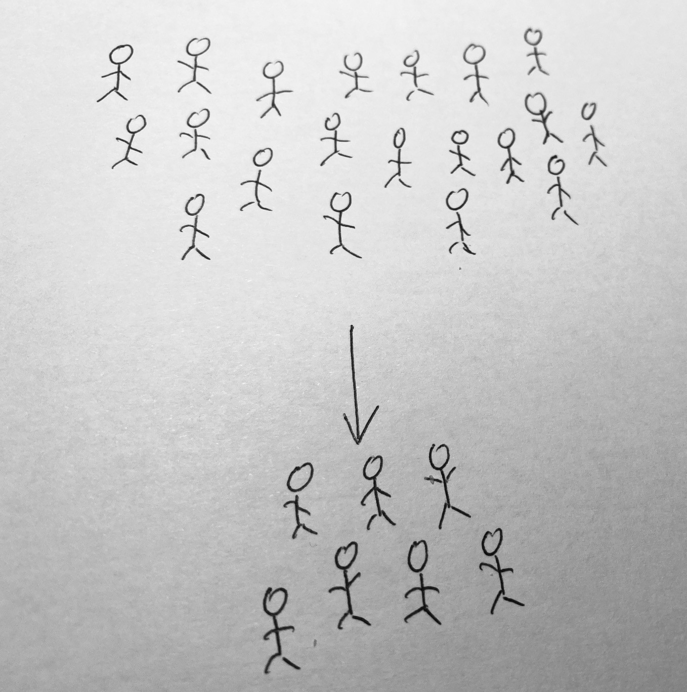
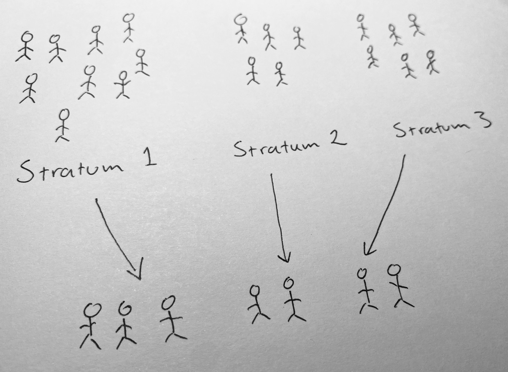
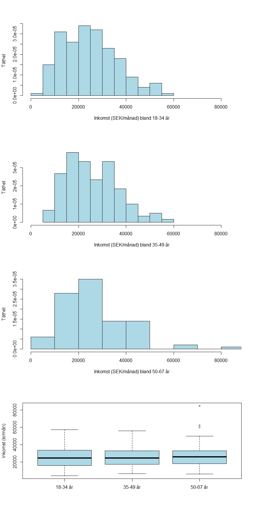
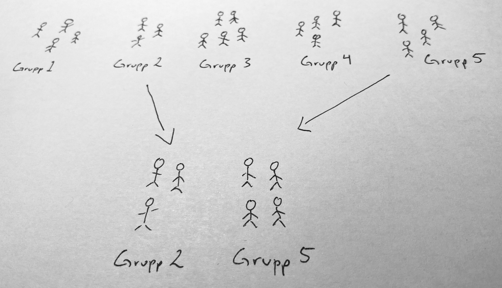

Kapitel 7 Urvalsmetoder
Detta kapitel utgår från vi önskar beskriva en ändlig population vars värden betraktas som fixa och ej slumpmässiga. Om hela populationen är känd finns ingen osäkerhet, men av olika anledningar kan inte hela populationen undersökas. Vi är därför hänvisade till att genomföra ett slumpmässigt urval. Detta är en del i ett designbaserat ramverk där slumpmässigheten beror på själva urvalsdesignen.
En alternativ sätt att betrakta slumpmässigheten är utgå från ett modellbaserat ramverk där populationen är en statistisk matematisk modell. Målet kan då vara att skatta parametrarna i denna modell för exempelvis kunna beskriva modellen eller använda modellen för prediktion.
utgångspunkten här är emellertid det designbaserade ramverket och en ändlig population bestående av \(N\) element (objekt). Beteckna element \(k\) med sitt nummer \(k\). Elementen i den ändliga populationen \(U\) kan listas \[U=\left\{1,2,\ldots,k,\ldots,N\right\}.\] Låt \(x\) beteckna en variabel av intresse och låt \(x_k\) vara det värdet som element \(k\) har.
En är en konstant som beskriver en variabel i populationen \(U\) och i en ändlig population kan en sådan formuleras utifrån populationens fixa värden. Parametern populationsmedelvärdet är exempelvis
\[\mu = \dfrac{x_1+x_2+\cdots+x_N}{N} = \dfrac{1}{N}\sum_{i=1}^N x_i\]
Andra vanliga parametrar är andelen, \(p\), totalen, \(\tau\), och variansen, \(\sigma^2\):
\[p=\frac{x}{n},\,\,\,\text{där}\, x \,\text{är antal händelser},\,\,\,\,\,\,\,\,\,\tau = \sum_{i=1}^N x_i = N\mu, \,\,\,\,\,\,\,\,\,\sigma^2 = \dfrac{1}{N}\sum_{i=1}^N (x_i - \mu)^2=\sum_i^N x_i^2-\mu^2.\]
Observera att parametrarna inte är slumpvariabler eftersom populationens värden är fixa. Slumpmässigheten beror på den slumpmässiga urvalsdesignen som används. Målet med detta kapitel är att beskriva några olika urvalsdesigner och dess betydelse för skattning av några parametrar i populationerna.
För att exemplifiera de olika urvalsmetoderna i R kommer följande data att användas. Läs därför in följande dataframe om du ska replikera exempel.
# Töm minnet
rm(list=ls())
# Börja med att läsa in data till uppgiften
df <- data.frame(id = 500:919,
inkomst = c(21612,26831,29068,41121,26601,10495,32891,23065,20098,27192,10864,33128,25951,13931,42063,20053,16979,18457,13727,12289,18474,29347,6172,62354,26727,40591,32350,15695,39887,36051,27667,32995,16711,29466,46706,15008,16223,12420,29185,21492,32746,36412,18635,9407,42185,18270,60093,43245,26905,47235,23508,29302,33199,16940,14905,18904,8200,10823,13540,32811,35465,19754,17484,19823,31397,26130,22034,20491,25759,84710,18300,29405,18801,14813,20879,24499,16288,40533,39616,25343,40417,11639,42591,29613,49918,24015,7917,48072,23721,40454,22857,24890,26873,25733,31870,22394,28161,40196,7263,9187,30253,6462,37143,31732,12895,41056,19258,24978,25309,19061,30371,22022,30063,44522,26037,29028,10030,24272,11394,18576,20376,31086,11700,17003,34196,19755,44144,23741,35294,41388,16435,18644,15322,51665,23378,50478,34808,20447,41233,17311,13941,39664,13168,28809,55952,12495,20185,38094,13822,32932,22205,36625,51575,21508,33509,26322,15392,21626,18837,24299,38921,38951,18360,32974,14131,28463,38232,20072,24300,40883,9090,30565,32935,32589,14408,33223,20177,32574,30640,16255,24056,18365,22039,32859,13595,10514,19490,30075,29849,14371,15076,18983,26641,14967,38646,27197,15314,9058,10275,19248,33629,16039,15302,8363,29178,29565,35454,25673,25116,21695,12594,31860,48489,37977,20106,45531,27277,15418,18315,20529,24322,9509,22487,14443,30287,33711,28788,38495,43640,21820,12945,29219,26099,53993,18370,13513,34515,39675,24622,10069,42460,21113,32073,40741,25925,48530,37672,16809,53412,28576,20974,53895,17485,9382,26977,37076,34885,24809,12793,18749,22223,27462,33319,25212,19846,36005,22765,25484,5710,22545,26475,50017,10044,28683,28379,36793,37007,43140,11389,28621,8074,18887,8729,34029,22957,25761,21928,23366,21629,29325,17545,34121,9780,34344,15565,35821,22192,24715,29730,36446,19315,18764,30303,44705,24113,24773,13433,21116,22444,17098,27646,29356,11167,39386,46786,20476,32806,8196,20299,11016,28822,34008,36611,40839,38823,27474,21803,23579,24328,26289,34776,42902,5958,20928,8996,14684,19391,14105,24321,31704,40910,14725,25166,33578,21071,37265,21827,17284,16401,38311,10416,16634,32329,18411,11388,22741,45799,24504,18190,9708,9590,10068,15552,34781,17205,12180,31054,19803,34321,28206,13392,25659,13679,10817,48137,16057,30680,28931,8746,51031,15530,21598,12816,39388,36873,10815,26335,8332,25860,12491,26264,17914,13240,51238,18080,28812,40576,33316,3978,32843,14942,33416,11274,14775,25466,15959,21031,12042,9518,38184,10007,8226,11975,29364,57382,11814,28760,19193,24117,35747),
alder = c(3,3,3,3,3,3,3,3,3,3,3,3,3,3,3,3,3,3,3,3,3,3,3,3,3,3,3,3,3,3,3,3,3,3,3,3,3,3,3,3,3,3,3,3,3,3,3,3,3,3,3,3,3,3,3,3,3,3,3,3,3,3,3,3,3,3,3,3,3,3,3,3,3,3,3,3,3,3,3,3,3,3,3,3,3,3,3,3,3,3,3,3,3,3,3,3,3,3,3,3,2,2,2,2,2,2,2,2,2,2,2,2,2,2,2,2,2,2,2,2,2,2,2,2,2,2,2,2,2,2,2,2,2,2,2,2,2,2,2,2,2,2,2,2,2,2,2,2,2,2,2,2,2,2,2,2,2,2,2,2,2,2,2,2,2,2,2,2,2,2,2,2,2,2,2,2,2,2,2,2,2,2,2,2,2,2,2,2,2,2,2,2,2,2,2,2,2,2,2,2,2,2,2,2,2,2,2,2,2,2,2,2,2,2,2,2,2,2,2,2,1,1,1,1,1,1,1,1,1,1,1,1,1,1,1,1,1,1,1,1,1,1,1,1,1,1,1,1,1,1,1,1,1,1,1,1,1,1,1,1,1,1,1,1,1,1,1,1,1,1,1,1,1,1,1,1,1,1,1,1,1,1,1,1,1,1,1,1,1,1,1,1,1,1,1,1,1,1,1,1,1,1,1,1,1,1,1,1,1,1,1,1,1,1,1,1,1,1,1,1,1,1,1,1,1,1,1,1,1,1,1,1,1,1,1,1,1,1,1,1,1,1,1,1,1,1,1,1,1,1,1,1,1,1,1,1,1,1,1,1,1,1,1,1,1,1,1,1,1,1,1,1,1,1,1,1,1,1,1,1,1,1,1,1,1,1,1,1,1,1,1,1,1,1,1,1,1,1,1,1,1,1,1,1,1,1,1,1,1,1,1,1,1,1,1,1,1,1,1,1),
postnr = c(85466,15111,1111,42520,7655,4434,113231,5520,112233,7854,4520,85466,4520,5520,15111,4343,9866,222,64267,55220,7655,222,42520,85466,4520,4434,42520,5554,1111,222,4520,7854,15111,3133,7854,1111,5554,77664,1131,42520,85466,112233,42520,1111,453,14520,453,453,4434,77664,85466,5520,15111,5554,7854,3467,3133,5520,15111,4434,112233,15111,112233,85466,1111,1111,7655,4343,85466,55220,113231,55220,15111,85466,85466,453,9866,85466,85466,9866,85466,1131,4434,77664,9866,3467,5520,14520,85466,113231,4520,4343,85466,4520,222,85466,1111,4520,4343,85466,14520,55220,3467,42520,64267,85466,7655,1111,113231,112233,3133,3133,453,3133,9866,4520,7854,222,453,112233,7854,64267,222,222,4520,1111,7854,3467,1111,7655,85466,9866,4520,453,5520,4343,3133,42520,4343,4520,1111,85466,55220,453,9866,55220,3467,112233,9866,4434,222,64267,7854,85466,3467,85466,15111,85466,4343,85466,77664,77664,113231,85466,3467,85466,4343,15111,4434,1131,85466,9866,7854,5520,453,15111,113231,9866,85466,113231,42520,85466,14520,55220,7655,85466,64267,9866,4434,4434,4520,3467,55220,15111,3467,85466,85466,4343,85466,222,85466,453,9866,4343,4434,4343,7854,5554,7854,7655,5554,1131,9866,9866,9866,64267,3467,4343,1131,4520,7854,113231,7655,55220,1131,85466,113231,9866,1111,7655,85466,9866,453,9866,9866,15111,9866,7854,85466,1131,7854,7854,5520,14520,77664,7854,1131,113231,9866,3467,77664,113231,4520,4343,112233,9866,4343,1111,453,453,112233,55220,4520,85466,222,4434,85466,85466,15111,3467,112233,1131,3133,4343,7854,4434,85466,77664,85466,9866,85466,5520,4434,85466,5520,5554,15111,9866,3467,112233,222,7854,85466,453,4343,7854,85466,9866,64267,4520,14520,453,3467,4343,453,1111,14520,222,15111,112233,7655,7854,85466,64267,85466,85466,9866,55220,15111,77664,77664,222,7854,3467,77664,64267,15111,85466,113231,77664,85466,85466,85466,112233,1131,7854,64267,7854,4343,222,85466,64267,85466,4520,1111,3467,5520,113231,3467,1111,4520,42520,85466,1131,1131,3467,3133,15111,85466,15111,9866,14520,3133,85466,112233,85466,3467,7854,453,1131,4343,85466,9866,42520,113231,1111,112233,5520,113231,9866,7655,453,5520,55220,5520,85466,55220,85466,5554,453,55220,7655,453,1131,222,42520,9866,1111,15111,4520,4520,85466,3467,5554,55220,4520,1131,85466,5520,4434,4434,64267,1111,1111,14520,5554,42520,85466,7854,4343))7.1 Obundet slumpmässigt urval utan återläggning

Vid OSU med återläggning (OSU-MÅ) från en ändlig populationen med storleken \(N\) riskerar samma element väljas flera gånger. Alternativet är OSU utan återläggning (OSU-UÅ). Om urvalstorleken är \(n\) finns vid OSU-UÅ \[\binom{N}{n}=\dfrac{N!}{n!(N-n)!}\] möjliga urval. Alla urval har samma sannolikhet att väljas. Vid ett OSU-UÅ har således varje objekt samma inklusionssannolikhet, \(n/N\).
OSU-MÅ respektive OSU-UÅ är de två urvalsmetoder som är grunden för mycket av den inferens som vi gör. OSU-MÅ kan illustreras med att lappar dras slumpmässigt från en hatt och varje gång en lapp dragits så läggs den tillbaka i hatten efter att värdet noterats, medan OSU-UÅ innebär att lappar dras slumpmässigt från en hatt, utan att lapparna läggs tillbaka. En mer formell analogi är att OSU-MÅ är som dragning från en binomialfördelning medan OSU-UÅ är som dragning från en hypergeometrisk fördelning.
Om urvalsstorleken \(n\) är liten relativt populationsstorleken \(N\), låt säg \(n/N < 0.01\) saknar det dock praktisk betydelse om vi väljer OSU-MÅ eller OSU-UÅ.
Nedan illustreras de bägge urvalsmetoderna OSU-MÅ och OSU-UÅ i R.
# Använd sample() för att dra urval från populationsvektorn x_pop med storleken N = 4
x_pop <- c(6,4,7,9)
# Dra ett osu med återläggning med n = 2
x_osu_ma <- sample(x_pop, size = 2, replace = TRUE)
x_osu_ma
# Dra ett osu utan återläggning med n = 2
x_osu_ua <- sample(x_pop, size = 2, replace = FALSE)
x_osu_uaI praktiken måste vi inte bara dra ett OSU-UÅ från en vektor, utan i regel består en urvalsram av exempelvis kontaktuppgifter. Vi illusterar därför hur ett urval från en dataframe kan genomföras i R.
Först dras unika identifieringsnummer. Därefter matchas identifieringsnummer till rader. Det logiska kommandot \(==\) går ej att tillämpa eftersom \(id\) och \(idnr\_ous\_ua\) har olika storlek. Istället används operatorn \(\%in\%\) för att finna de element som matchar mellan två vektorer. Sedan används funktionen which() för att hitta index (radnummer) för de rader vi har hittat matchande element. Avslutningsvis väljs sedan urvalet med hjälp av indexering.
# Använd sample() för att dra urval från vektorn x_pop # Vi konstruerar en urvalsram nedan.
id <- c(5,7,44,41,99,101,6)
namn <- c("Alex", "Robin", "Kim", "Charlie", "Tintin", "Lo", "Kim")
tfn <- c(4443344,633223,3335664,322112,73344,42224,5435732)
adress <- c("Storgatan 1", "Kungsgatan 4", "Drottninggatan 6", "Backvägen 33",
"Storgatan 7", "Lillgränd 6", "Skogsvägen 90")
ram <- data.frame(id = id, namn = namn, tfn = tfn, adress = adress)
# Urvalsstorleken sätts till n=3. Välj 3 idnr med OSU-UÅ och spara i idnr_ous_ua
n <- 3
idnr_ous_ua <- sample(df$id, n, replace = FALSE)
# Välj rader i data frame (ramen) som korresponderar till slumpmässigt valda idnr.
osu_ua <- df[which(df$id %in% idnr_ous_ua), ]
osu_uaDet är inte uppenbart för nybörjaren varför ovanstående kod ska användas. Det finns alternativa sätt att dra urval från en dataframe, exempelvis där användaren först skapar skapar en variabel med radnummer, 1:N, från vilken radnummer väljs slumpmässigt. Därefter rader väljas från en dataframe göras med indexinering. En sådan metod bygger dock på sorteringen i dataframet bibehålls.
Oavsett metod förutsätter vi att alla element förekommer endast en gång i urvalsramen. Funktionen anyDuplicated() kan användas för att undersöka om värden på identifieringsvariabeln förekommer flera gånger.
anyDuplicated(id)7.1.1 Inferens för populationsmedelvärdet, \(\mu\)
Givet ett OSU-UÅ med storleken \(n\) gäller följande:
- Stickprovsmedelvärdet, \[\bar{x} = \dfrac{1}{n}\sum_{i=1}^n x_i\] är en väntevärdesriktig skattning av \(\mu\).
- Stickprovsmedelvärdets varians är \[V(\bar{x}) = \left(\dfrac{N-n}{N-1}\right)\dfrac{\sigma^2}{n},\] vilken skattas med \[\hat{V}(\bar{x}) = \left(1 - \dfrac{n}{N}\right)\dfrac{s^2_x}{n},\] där \(s^2\) är stickprovsvariansen. I praktiken skattas alltid \(V(\bar{x})\).
- Om stickprovsstorleken är tillräckligt stor är stickprovsmedelvärdets samplingfördelning approximativt normalfördelad på grund av centrala gränsvärdessatsen (CGS).
- Om stickprovsstorleken är tillräckligt stor (ofta \(n>30\)) ges ett konfidensintervall för \(\mu\) av \[ \bar{x}\pm z_{\alpha/2}\sqrt{\hat{V}(\bar{x})} \] där \(1-\alpha\) är konfidensgraden och \(z_{\alpha/2}\) är det \(z\)-värde som erhålls om svanssannolikheten \(\alpha/2\) läggs i högra svansen. För mindre stickprov används \(t\)-fördelningen med \(n-1\) frihetsgrader, under förutsättningen att \(x\) är normalfördelad.
- För statistiska test krävs en nollhypotes, en mothypotes, en testfunktion samt data. Om stickprovsstorleken är tillräckligt stor och om nollhypotesen \(H_0:\mu=\mu_0\) är sann är testfunktionen \[z = \dfrac{\bar{x} - \mu_0}{\sqrt{\hat{V}(\bar{x})}}\] approximativt \(N(0,1)\). Vi beräknar \(z_{obs}\) och undersöker, baserat på om mothypotesen är ensidig eller tvåsidig, hur extremt det observerade värdet är i denna fördelning. För mindre stickprov används \(t\)-fördelningen med \(n-1\) frihetsgrader, under förutsättningen att \(x\) är normalfördelad.
Exempel 1: Inkomst
Kommunen A önskar att med 95% konfidensgrad skatta medelinkomsten i kommunen. Målpopulationen är invånare i åldern 18-67 år och rampopulationen är en lista med 11200 individer från registret över totalbefolkningen. Vi utgår från att det inte finns någon övertäckning eller undertäckning och drar ett OSU-UÅ bestående av 420 individer från rampopulationen. Individerna kontaktas och data samlas in utan bortfall. Besvara kommunens önskemål samt reflektera över om du kan lita på resultatet.
# Utgå från det inlästa datasetet df.
# Börja med att läsa in data till uppgiften och titta på data!
hist(df$inkomst,
breaks = 20,
main = "",
xlab = "Inkomst (SEK/månad)",
ylab = "Antal",
col = "lightblue")
Data verkar inte komma från en normalfördelning, men fördelningen är inte heller väldigt skev.
# Populationsstorlek
N <- 11200
# Stickprovsstorlek
n <- 420
# Medelvärde
xbar <- mean(df$inkomst)
# Stickprovsvarians
s2 <- var(df$inkomst)
# Skattningen av stickprovsmedelvärdets varians vid OSU-UÅ
vhatxbar <- (1 - n/N)*(s2/n)
# Konfidensintervall med konfidensgraden 100(1-alpha)%.
alpha <- 0.05
z_alpha <- qnorm(1 - alpha/2)
# Konfidensintervallets gränser
ll_mu <- xbar - z_alpha*sqrt(vhatxbar)
ul_mu <- xbar + z_alpha*sqrt(vhatxbar)
# Resultat
resultat_mu <- c(xbar, ll_mu, ul_mu)
resultat_mu ## [1] 25593.58 24500.23 26686.93Medelinkomsten i kommunen skattas till 25594 kr/mån. Med 95% säkerhet täcker intervallet 24500 kr/mån till 26687 kr/mån medelinkomsten i kommunen. Vi har ett OSU-UÅ vilket ger väntevärdesriktiga skattningar och eftersom urvalet är stort kan även skatta ett konfidensintervall eftersom vi på grund av CGS kan använda normalapproximationen.
Exempel 2: Inkomst
Kommunen A önskar testa om skatta medelinkomsten i kommunen är mer än 25000. Genom att påvisa att medelinkomsten är större än 25000, vilket innebär mer skatteintäkter, vågar kommunen göra en satsning på en ny idrottsanlägning. För mer information, se Exempel 1. Besvara kommunens önskemål samt reflektera över om du kan lita på resultatet.
# Använd uppgifter från tidigare exempel
# z-test
# Nollhypotesen
mu0 <- 25000
# Observera z-värde
zobs <- (xbar - mu0)/sqrt(vhatxbar)
# Beräkna p-värde utifrån att H1: mu > mu0
p_value <- 1 - pnorm(zobs)
p_value ## [1] 0.1436514Medelinkomsten i kommunen skattas till 25594 kr/mån. Vi kan på 5% signifikansnivå inte påvisa att medelinkomsten i kommunen är större 25000 (\(p=0.144\)). Då data stämmer relativt väl överens med nollhypotesen väljer kommunen att inte att investera i en ny idrottsanläggning. Vi har ett OSU-UÅ vilket ger väntevärdesriktiga skattningar och eftersom urvalet är stort kan vi använda ett approximativt \(z\)-test eftersom vi på grund av CGS kan använda normalapproximationen.

Normalfördelning eller \(t\)-fördelning?
Det går att argumentera för att \(t\)-fördelningen bör användas i beräkning av konfidensintervall och test även vid användning av approximativ normalfördelning på grund av CGS. Anledningen är att variansen i den approximativa normalfördelningen är okänd och därmed skattas denna varians. Om vi förlitar oss på CGS har dock valet mellan normal- och \(t\)-fördelning liten betydelse eftersom dessa fördelningar är snarlika i stora stickprov. Använd följande Shiny-app och jämför standardnormalfördelningen med t-fördelningar med olika frihetsgrader, där antalet frihetgrader beror på stickprovsstorleken. https://jetty.im.uu.se/shiny/Dist/
Ensidig eller tvåsidig mothypotes?
I många situationer är enbart ena svansen av intresse och då leder en tvåsidig mothypotes till att vi slösar bort signifikans i en för ändamålet ointressant svans. Nedan följer ett exempel på när ensidig mothypotes är rimlig:
- En miljöorganisation vill undersöka om miljöfarliga ämnen i en sjö överstiger ett gränsvärde. Om så är fallet kommer åtgärder vidtas. Inga förändringar kommer dock göras om det miljöfarliga ämnet inte överstiger gränsvärdet.
Vanligast är dock en tvåsidig mothypotes och är man osäker och inte kan motivera en ensidig mothypotes ska en sådan användas. Nedan följer ett exempel på när en tvåsidig mothypotes är rimlig:
- Ett experiment genomförs för att jämföra en ny arbetsmarknadsåtgärd med ett ordinarie åtgärdsprogram och syftet är att jämföra återgång till arbete bland långtidsarbetslösa. Även om man kanske hoppas på att den nya arbetsmarknadsåtgärden leder till att fler återgår till arbete så vore det även värdefullt att konstatera att det motsatta råder, dvs att det nya programmet istället leder till en försämring vad gäller återgång till arbete.
Valet av ensidig eller tvåsidig mothypotes får ALDRIG göras baserat på vad som observeras i stickprovet utan måste göras i förhand.
Kommer du ihåg?
\(p\)-värdet är sannolikheten att observera ett minst lika extremt värde som det observerade givet att nollhypotesen är sann. Beroende på hur hypoteserna är formulerade är \(p\)-värdet något av följande sannolikheter:
- För en händelse i höger svans, dvs \(H_1: \mu > \mu_0\) är \[p-value=\Pr(Z \geq z|H_0\,\,\text{sann})\]
- För en händelse i vänster svans, \(H_1: \mu < \mu_0\) \[p-value=\Pr(Z \leq z|H_0\,\,\text{sann})\]
- För en två-sidig \(H_1:\mu\neq \mu_0\) \[p-value=2 \cdot \min \left\{ \Pr(Z \leq z|H_0\,\,\text{sann}), \Pr(Z \geq z|H_0\,\,\text{sann}) \right\} \]
Om möjligt, beräkna alltid \(p\)-värdet istället för att enbart jämföra testfunktionens observerade värde med en kritisk punkt. Det går nämligen att tolka \(p\)-värdet som ett kontinuerligt mått på bevis mot nollhypotesen eller formulerat som i vilken utsträckning data stämmer överens med nollhypotesen. Ett lågt \(p\)-värde indikerar att data har låg överensstämmelse med nollhypoytesen. Om målet med studien trots allt innebär att ett beslut måste fattas kan \(p\)-värdet då enkelt relateras till vald signifikansnivå. Understiger \(p\)-värdet signifikansnivå så förkastas nollhypotesen, i annat fall kan nollhypotesen inte förkastas. Tänk på att signifikansnivån i dessa fall måste väljas i förväg.
7.1.2 Inferens för populationsandelen, \(p\)
Anta nu att \(x\) är binär. Givet OSU-UÅ gäller med storleken \(n\) gäller att:
- Stickprovsandelen \(\hat{p}\) är en väntevärdesriktig skattning av populationsandelen \(p\).
- Andelsestimatorns varians \[V(\hat{p}) = \left(\dfrac{N-n}{N-1}\right)\dfrac{p(1-p)}{n}\] skattas med \[\hat{V}(\hat{p}) = \left(1 - \dfrac{n}{N}\right)\dfrac{\hat{p}(1-\hat{p})}{n-1}\].
- Om \(np(1-p)>5\) är \(\hat{p} \underset{approx}{\sim} N(p,V(p))\).
- Givet normalapproximation ges ett konfidensintervall för \(p\) av \[ \hat{p}\pm z_{\alpha/2}\sqrt{\hat{V}(\hat{p})} \] där \(1-\alpha\) är konfidensgraden och \(z_{\alpha/2}\) är det \(z\)-värde som erhålls om svanssannolikheten \(\alpha/2\) läggs i högra svansen. För mindre stickprov kan exakta konfidensintervall användas.
- Givet normalapproximation och nollhypotesen \(H_0:p=p_0\) är sann är testfunktionen \[z = \dfrac{\hat{p} - p_0}{\sqrt{V(\hat{p})}}\] approximativt \(N(0,1)\). Eftersom vi utgår från är \(H_0\) är sann används inte den skattade variansen i testfunktionen. Vi beräknar \(z_{obs}\) och undersöker hur extremt det observerade värdet är i denna fördelning. Detta görs utifrån om mothypotesen är ensidig eller tvåsidig. För mindre stickprov kan exakta test användas.
Exempel 3: Inkomst mer än 30000
Kommunen A önskar att med 95% konfidensgrad skatta andelen i kommunen som har en inkomst över 30000. För mer information, se Exempel 1. Besvara kommunens önskemål samt reflektera över om du kan lita på resultatet.
# Använd uppgifter från tidigare exempel
# Inkomst mer än 30000
df$inkomst_30000 <- NA
df$inkomst_30000[df$inkomst > 30000] <- 1
df$inkomst_30000[df$inkomst <= 30000] <- 0
x <- sum(df$inkomst_30000)
phat <- x/n # Använd n givet att vi inte har bortfall!
# Skattningen av andelsestimatorns varians vid OSU-UÅ
vhatphat <- (1 - n/N)*(phat*(1-phat)/(n-1))
# Konfidensintervall med konfidensgraden 100(1-alpha)%.
alpha <- 0.05
z_alpha <- qnorm(1 - alpha/2)
# Konfidensintervallets gränser
ll_p <- phat - z_alpha*sqrt(vhatphat)
ul_p <- phat + z_alpha*sqrt(vhatphat)
# Resultat
resultat_p <- c(phat, ll_p, ul_p)
resultat_p ## [1] 0.3214286 0.2775572 0.3653000# Koll av CGS
n*phat*(1-phat)## [1] 91.60714Andelen i kommunen med en inkomst över 30000 kr/mån skattas 0.32. Med 95% säkerhet täcker intervallet 0.28 till 0.37 andelen i kommunen som har en medelinkomsten som är över 30000 kr/mån. Vi har ett OSU-UÅ vilket ger väntevärdesriktiga skattningar och förutsättningarna för att på grund av CGS kan använda normalapproximationen är uppfylld.
Exempel 4: Inkomst mer än 30000
Kommunen A önskar testa om 50% i kommunen har en inkomst över 30000. För mer information, se Exempel 1. Besvara kommunens önskemål samt reflektera över om du kan lita på resultatet.
# Använd uppgifter från tidigare exempel
# z-test
# Nollhypotes
pH0 <- 0.5
# Observerat z-värde
zobs <- (phat - pH0)/sqrt(pH0*(1-pH0)/n)
# Beräkna p-värde utifrån att H1: p != pH0
p_value_pH0 <- 2*(1 - pnorm(abs(zobs)))
p_value_pH0 ## [1] 2.493561e-13# Test av CGS
n*pH0*(1-pH0)## [1] 105Andelen i kommunen med en inkomst över 30000 kr/mån skattas till 0.32. Vi kan på 5% signifikansnivå påvisa att andelen med inkomst över 30000 i kommunen inte är 0.50 (\(p<0.001\)). Data stämmer inte överens med nollhypotesen. Vi har ett OSU-UÅ vilket ger väntevärdesriktiga skattningar och förutsättningarna för att, på grund av CGS, använda normalapproximationen är uppfylld.

Centrala gränsvärdessatsen och inferens om \(p\)
Tumregeln \(np(1-p)>5\) är dålig om andelen i populationen är nära 0 eller 1. Om andelen i populationen är nära 0 eller 1 krävs stort stickprov för att konfidensgraden ska vara rätt. Det finns dock så kallade exakta alternativ för att skapa konfidensintervall och genomföra test.
7.1.3 Inferens för populationstotalen, \(\tau\)
Givet OSU-UÅ med storleken \(n\) gäller att
- Totalestimatorn \(\hat{\tau} = N\bar{x}\) är en väntevärdesriktig skattning av \(\tau\). Om \(x\) är binär gäller att \(\hat{\tau} = N\hat{p}\).
- Totalestimatorns varians är \(V(\hat{\tau}) = N^2V(\bar{x})\), vilken skattas med \(\hat{V}(\hat{\tau}) = N^2\hat{V}(\bar{x})\). Om \(x\) är binär gäller att andelsestimatorns varians är \(V(\hat{\tau}) = N^2V(\hat{p})\), vilken skattas med och \(\hat{V}(\hat{\tau}) = N^2\hat{V}(\hat{p})\).
- Samplingfördelningen följer samma regler som för \(\bar{x}\) respektive \(\hat{p}\).
- För konfidensintervall och test av \(H_0:\tau=\tau_0\) gäller samma förutsättningar som för \(\mu\) och \(p\).
Exempel 5: Inkomst mer än 30000
Kommunen A önskar att med 95% konfidensgrad skatta antalet i kommunen som har en inkomst över 30000. För mer information, se Exempel 1. Besvara kommunens önskemål samt reflektera över om du kan lita på resultatet.
# Använd uppgifter från tidigare exempel
tauhat <- N*phat
# Skattningen av totalestimatorns varians vid OSU-UÅ
vhattauhat <- N^2*vhatphat
# Konfidensintervall med konfidensgraden 100(1-alpha)%.
alpha <- 0.05
z_alpha <- qnorm(1 - alpha/2)
# Konfidensintervallets gränser
ll_tau <- tauhat - z_alpha*sqrt(vhattauhat)
ul_tau <- tauhat + z_alpha*sqrt(vhattauhat)
# Resultat
resultat_tau <- c(tauhat, ll_tau, ul_tau)
resultat_tau ## [1] 3600.00 3108.64 4091.36# Koll av CGS
n*phat*(1-phat)## [1] 91.60714Antalet i kommunen med en inkomst över 30000 skattas till 3600 stycken. Med 95% säkerhet täcker intervallet 3109 till 4091 antalet i kommunen med en inkomst över 30000. Vi har ett OSU-UÅ vilket ger väntevärdesriktiga skattningar och förutsättningarna för att, på grund av CGS, använda normalapproximationen är uppfylld.
7.1.4 Beräkningar av stickprovstorlek
Låt \(\hat{\theta}\) vara en estimator. Tre vanliga precisionskrav är att
- \(\text{medelfel}=\sqrt{V(\hat{\theta})},\)
- \(\text{felmarginal}=tabellvärde\cdot \sqrt{V(\hat{\theta})}\) eller
- \(\text{KIbredd}=2\cdot tabellvärde \cdot \sqrt{V(\hat{\theta})}\)
får högst vara av en viss storlek. Storleken beror på vilken nogrannhet som krävs i en undersökning, vilket i sin tur beror på tillämpningen. En opinionsundersökning om partisympatier har kanske lägre krav på precision än urvalsundersökning som syftar till att undersöka halten av miljögifter i en sjö. Mer konkret kan formulera precisionskrav som följer:
- Kan vi i en partisympatiundersökning acceptera en felmarginal på 10 procentenheter när vi skattar andelen i väljarkåren som sympatiserar med Socialdemokraterna?
- Kan vi vid en skattning av andelen individer med antikroppar från Covid-19 acceptera ett konfidensintervall med längden 3 procentenheter?
Precisionskravet beror sedan på variansen för vald estimator samt eventuellt ett tabellvärde som beror på samplingfördelningen. För att sedan beräkna urvalsstorleken \(n\) stoppar vi in kända parametervärden i precisionskravet, till exempel populationsvariansen, \(\sigma^2\) och populationsstorleken \(N\). Slutligen löser vi ut urvalstorleken \(n\). Om en algebraisk lösning är svår att genomföra kan en iterativ lösning göras i R.
Notera att det finns precisionkrav som utgår från Typ-I-fel (signifikansnivå) och Typ-II-fel (styrka), men detta ingår inte i detta kapitel om urvalsmetoder
Exempel 6: Beräkning av stickprovsstorlek
Grannkommunen B önskar genomföra en undersökning för att skatta medelinkomsten i kommun B. För att planera stickprovsstorleken utgår man från att standardavvikelsen i kommun A är \(11652.95\) kr/mån, och antar att denna är samma i kommun B. Vidare nöjer man sig med ett konfidensintervall som har längden 1000 kr/mån. Man avser sedan genomföra ett OSU-UÅ på motsvarande sätt som kommun A. I kommun B finns rampopulationen 21000 individer och det finns inget problem med övertäckning och undertäckning.
# Bestäm spridningen i populationen, sätter 1 som default
sigma2 <- 11652.95^2
# Känd populationsstorlek
N <- 21000
# Bestäm konfidensgrad eller signifikansnivå, sätter 95%/5% som default
alpha <- 0.05
z_alpha <- qnorm((1-alpha/2))
# Lista olika stickprovsstorlekar, sätter 1 till 1000 som default
n <- 1:4000
# Beräkna (teoretiska) variansen för stickprovsmedelvärdet för olika n
vxbar <- ((N-n)/(N-1))*sigma2/n
# Beräkna konfidensintervallets bredd för olika stickprovsstorlekar
xbar_KIbredd <- 2*z_alpha*sqrt(vxbar)
# Välj stickprovsstorlek utifrån valt precisionskra, sätter 0.2 som default
precisionskrav <- 1000
# Välj den minsta stickprovsstorlek som uppnår precisionskravet.
min(n[xbar_KIbredd <= precisionskrav])
# Studera precisionskrav som en funktion av stickprovstorleken
plot(n, xbar_KIbredd, type = "l", col = "red")
abline(h = precisionskrav)För att ett 95% konfidensintervall ska få vara högst 1000 kr/mån krävs en urvalsstorlek på 1899 individer. Detta är givet att urvalet är ett OSU-UÅ från populationen med 21000 individer samt att populationens standardavvikelse är 11652.95 kr/mån.
7.2 Stratifierat urval

Populationen indelas nu i \(K\) stycken disjunkta strata. Populationsstorlekan i stratum \(j\) betecknas \(N_j\) och den totala populationsstorleken är därmed \(N=N_1 + \dots + N_K\). Vidare betecknar \(\mu_j\), \(p_j\) och \(\sigma^2_j\) populationsmedelvärdet, populationsandelen respektive populationsvariansen i stratum \(j\). Parametrarna av intresse kan nu formuleras baserat på den stratifierade populationen:
\[\mu = \dfrac{N_1}{N}\mu_1 + \dfrac{N_2}{N}\mu_2 + \cdots + \dfrac{N_K}{N}\mu_K = \sum_{j=1}^K\dfrac{N_j}{N}\mu_j,\] \[\tau = N\mu = N_1\mu_1 + N_2\mu_2 + \cdots + N_K\mu_K = \sum_{j=1}^KN_j\mu_j, \]
\[p = \dfrac{N_1}{N}p_1 + \dfrac{N_2}{N}p_2 + \cdots + \dfrac{p_K}{N}\mu_K = \sum_{j=1}^K\dfrac{N_j}{N}p_j.\]
Från respektive stratum dras ett urval. Den stratumspecifika urvalsstorleken betecknas \(n_j\) och den totala urvalsstorleken i undersökningen är därmed \(n=n_1+\cdots+n_K\).
7.2.1 Inferens för \(\mu\)
Givet ett OSU-UÅ från respektive stratum är:
- Stickprovsmedelvärdet vid stratifierat urval, \[\bar{x}_{st} = \dfrac{N_1}{N}\bar{x}_1 + \dfrac{N_2}{N}\bar{x}_2 + \cdots \dfrac{N_K}{N}\bar{x}_K =\sum_{j=1}^K\dfrac{N_j}{N}\bar{x}_j\] är en väntevärdesriktig skattning av \(\mu\), där \(\bar{x}_{j}\) betecknar stickprovsmedelvärdet i stratum \(j\).
- Stickprovsmedelvärdets varians är \[V(\bar{x}_{st}) = \sum_{j=1}^K \left(\dfrac{N_j}{N}\right)^2 V(\bar{x}_j)\] där stickprovsmedelvärdets varians betecknas \[V(\bar{x}_j) = \left(\dfrac{N_j-n_j}{N_j-1}\right)\dfrac{\sigma^2_j}{n_j}\]. Ovanstående skattas med \[\hat{V}(\bar{x}_{st}) = \left(\dfrac{N_1}{N}\right)^2\hat{V}(\bar{x}_1) + \left(\dfrac{N_2}{N}\right)^2\hat{V}(\bar{x}_2) + \cdots + \left(\dfrac{N_K}{N}\right)^2\hat{V}(\bar{x}_K) = \sum_{j=1}^K \left(\dfrac{N_j}{N}\right)^2\hat{V}(\bar{x}_j)\] där \[\hat{V}(\bar{x}_j) = \left(1 - \dfrac{n_j}{N_j}\right)\dfrac{s^2_j}{n_j}\] och \(s^2_j\) är stickprovsvariansen i stratum \(j\).
- Om stickprovsstorleken är tillräckligt stor i respektive stratum, (\(n_j > 20\)), är \(\bar{x}_{st}\) approximativt normalfördelad.
- För konfidensintervall för \(\mu\) och test av \(H_0:\mu=\mu_0\) gäller samma formler som tidigare baserat på normalapproximationen.
Exempel 7: Inkomst
Kommunen A önskar att med 90% konfidensgrad skatta medelinkomsten i kommunen. Målpopulationen är invånare i åldern 18-67 år och rampopulationen är en lista med 11200 individer från registret över totalbefolkningen. Eftersom inkomst är relaterad till ålder genomförs en stratifiering utifrån ålderskategorierna 18-34 år (4000 individer), 35-49 år (4200 individer) och 50-67 år (3000 individer). Vi utgår från att det inte finns någon övertäckning eller undertäckning och drar från respektive stratum ett OSU-UÅ. Individerna kontaktas och data samlas in utan bortfall. Besvara kommunens önskemål samt reflektera över om du kan lita på resultatet.
# Vi inleder med att ordna data så att stratifieringsvariabeln är tydligare namngiven.
# Dessutom anger vi relevanta parametrar från undersökningen samt delar upp datamaterial i stratumspecifika data.
# Det är inte nödvändigt att göra den indelningen, utan det finns alternativa sätt att koda
# NOTERA ATT 1 = 18-34 år, 2 = 35-49 år, 3 = 50-67 år
df$age <- factor(df$alder)
levels(df$age)[levels(df$age) == "1"] <- "18-34 år"
levels(df$age)[levels(df$age) == "2"] <- "35-49 år"
levels(df$age)[levels(df$age) == "3"] <- "50-67 år"
# Populationsstorlekar från uppgiften
N_1 <- 3000
N_2 <- 4200
N_3 <- 4000
N <- N_1 + N_2 + N_3
# Stickprovsstorlekar. Räkna hur många som inte är NA i respektive stratum
n_1 <- sum(!is.na(df$inkomst[df$age == "18-34 år"]))
n_2 <- sum(!is.na(df$inkomst[df$age == "35-49 år"]))
n_3 <- sum(!is.na(df$inkomst[df$age == "50-67 år"]))
n <- n_1 + n_2 + n_3
# Medelvärde
xbar_1 <- mean(df$inkomst[df$age == "18-34 år"])
xbar_2 <- mean(df$inkomst[df$age == "35-49 år"])
xbar_3 <- mean(df$inkomst[df$age == "50-67 år"])
xbar_st <- (N_1/N)*xbar_1 + (N_2/N)*xbar_2 + (N_3/N)*xbar_3
# Stickprovsvarians
s2_1 <- var(df$inkomst[df$age == "18-34 år"])
s2_2 <- var(df$inkomst[df$age == "35-49 år"])
s2_3 <- var(df$inkomst[df$age == "50-67 år"])
# Skattningen av stickprovsmedelvärdets varians vid stratifierat urval
vhatxbar_1 <- (1 - n_1/N_1)*(s2_1/n_1)
vhatxbar_2 <- (1 - n_2/N_2)*(s2_2/n_2)
vhatxbar_3 <- (1 - n_3/N_3)*(s2_3/n_3)
vhatxbar_st <- (N_1/N)^2*vhatxbar_1 +(N_2/N)^2*vhatxbar_2 + (N_3/N)^2*vhatxbar_3
# Konfidensgraden 100(1-alpha)%.
alpha <- 0.1
z_alpha <- qnorm(1 - alpha/2)
# Konfidensintervallets gränser
ll_mu_st <- xbar_st - z_alpha*sqrt(vhatxbar_st)
ul_mu_st <- xbar_st + z_alpha*sqrt(vhatxbar_st)
# Resultat
resultat_mu_st <- c(xbar_st, ll_mu_st, ul_mu_st)
resultat_mu_st## [1] 25853.41 24830.77 26876.04Medelinkomsten i kommunen skattas till 27703 kr/mån. Med 90% säkerhet täcker intervallet 24759 kr/mån till 26647 kr/mån medelinkomsten i kommunen. Vi har ett STOSU vilket ger väntevärdesriktiga skattningar och eftersom alla stratumspecifika urval är stort kan vi även skatta ett konfidensintervall eftersom vi på grund av CGS kan använda normalapproximationen.
Det är ofta illustrativt att även redovisa stratumspecifik beskrivande statistik i respektive stratum och även att undersöka variabelns fördelning i respektive stratum. En sådan tabell samt figurer bör konstrueras i praktiken, men ni förväntas inte genomföra detta på alla uppgifter som ni ska lösa.
# Beskrivning av stratumspecifik statistik
stratum_tabell <- matrix(c(N_1,N_2,N_3,
n_1,n_2,n_3,
xbar_1,xbar_2,xbar_3,
s2_1,s2_2,s2_3), 3, 4)
colnames(stratum_tabell) <- c("Nj", "nj", "xbarj", "s2j")
rownames(stratum_tabell) <- levels(df$age)
stratum_tabell
# Stratumspecifika fördelningar
par(mfrow = c(4,1))
hist(df$inkomst[df$age == "18-34 år"],
breaks = 8,
main = "",
xlab = "Inkomst (SEK/månad) bland 18-34 år",
ylab = "Täthet",
col = "lightblue",
xlim = c(0, 85000),
freq = FALSE)
hist(df$inkomst[df$age == "35-49 år"],
breaks = 8,
main = "",
xlab = "Inkomst (SEK/månad) bland 35-49 år",
ylab = "Täthet",
col = "lightblue",
xlim = c(0, 85000),
freq = FALSE)
hist(df$inkomst[df$age == "50-67 år"],
breaks = 8,
main = "",
xlab = "Inkomst (SEK/månad) bland 50-67 år",
ylab = "Täthet",
col = "lightblue",
xlim = c(0, 85000),
freq = FALSE)
boxplot(df$inkomst ~ df$age,
col = "lightblue",
xlab = "",
ylab = "Inkomst (kr/mån)")## Nj nj xbarj s2j
## 18-34 år 3000 200 25002.49 131305562
## 35-49 år 4200 120 25669.14 116515782
## 50-67 år 4000 100 26685.07 168804297
7.2.2 Inferens för \(p\)
Anta att \(x\) är binär. Givet ett OSU-UÅ från respektive stratum är:
- Stickprovsandelen \(\hat{p}_{st}=\sum_{j=1}^K\dfrac{N}{N_j}\hat{p}_j\) är en väntevärdesriktig skattning av \(p\), där den stratumspecifka stickprovsandelen är \(\hat{p}_j\).
- Stickprovsandelens varians \[V(\hat{p}_{st}) = \sum_{j=1}^K\left(\dfrac{N_j}{N}\right)^2V(\hat{p}_j)\] skattas med \[\hat{V}(\hat{p}_{st}) = \sum_{j=1}^K\left(\dfrac{N_j}{N} \right)^2\hat{V}(\hat{p}_j),\] där \[\left(1 - \dfrac{n_j}{N_j}\right)\dfrac{\hat{p}_j(1-\hat{p}_j)}{n_j-1}.\]
- Om \(n_jp_j(1-p_j)>5\) i alla stratum \(j\) är \(\hat{p}_{st}\) approximativt normalfördelad.
- Hypotesprövning för andelen i populationen med stratifierat urval ingår inte på kursen!
Exempel 8: Inkomst över 30000 kr/mån Kommunen A önskar att med 90% konfidensgrad skatta andelen i kommunen med en inkomst över 30000 kr/mån. För mer information, se Exempel 7. Besvara kommunens önskemål samt reflektera över om du kan lita på resultatet.
# Uppgifter från tidigare exempel
# Andelar (givet att det inte finns bortfall!)
x_1 <- sum(df$inkomst_30000[df$age == "18-34 år"])
x_2 <- sum(df$inkomst_30000[df$age == "35-49 år"])
x_3 <- sum(df$inkomst_30000[df$age == "50-67 år"])
phat_1 <- x_1/n_1
phat_2 <- x_2/n_2
phat_3 <- x_3/n_3
phat_st <- (N_1/N)*phat_1 + (N_2/N)*phat_2 + (N_3/N)*phat_3
# Skattningen av stickprovsmedelvärdets varians vid stratifierat urval
vhatphat_1 <- (1 - n_1/N_1)*(phat_1*(1-phat_1)/(n_1-1))
vhatphat_2 <- (1 - n_2/N_2)*(phat_2*(1-phat_2)/(n_2-1))
vhatphat_3 <- (1 - n_3/N_3)*(phat_3*(1-phat_3)/(n_3-1))
vhatphat_st <- (N_1/N)^2*vhatphat_1 +(N_2/N)^2*vhatphat_2 + (N_3/N)^2*vhatphat_3
# Konfidensgraden 100(1-alpha)%.
alpha <- 0.1
z_alpha <- qnorm(1 - alpha/2)
# Konfidensintervallets gränser
ll_p_st <- phat_st - z_alpha*sqrt(vhatphat_st)
ul_p_st <- phat_st + z_alpha*sqrt(vhatphat_st)
# Resultat
resultat_p_st <- c(phat_st, ll_p_st, ul_p_st)
resultat_p_st
# Koll av förutsättningar
n_1*phat_1*(1-phat_1)
n_2*phat_2*(1-phat_2)
n_3*phat_3*(1-phat_3)## [1] 0.3267857 0.2863618 0.3672096## [1] 42.395## [1] 27.59167## [1] 21.39Andelen i kommunen med en inkomst över 30000 kr/mån skattas 0.337. Med 90% säkerhet är andelen i kommunen med en inkomst över 30000 kr/mån mellan 0.286 och 0.367. Vi har ett OSU-UÅ vilket ger väntevärdesriktiga skattningar och förutsättningarna för att använda normalapproximationen är uppfylld.
Vi presenterar också en sammanställning av stratumspecfika kvantiteter.
## Nj nj phatj
## 18-34 år 3000 200 0.3050000
## 35-49 år 4200 120 0.3583333
## 50-67 år 4000 100 0.31000007.2.3 Inferens för \(\tau\)
Givet ett OSU-UÅ från respektive stratum är:
- Totalestimatorn \(\hat{\tau}_{st} = N\bar{x}_{st}\) är en väntevärdesriktig skattning av \(\tau\). Om \(x\) är binär gäller att \(\hat{\tau}_{st} = N\hat{p}_{st}\)
- Totalestimatorns varians är \(V(\hat{\tau}_{st}) = N^2V(\bar{x}_{st})\), vilken skattas med \(\hat{V}(\hat{\tau}_{st}) = N^2\hat{V}(\bar{x}_{st})\). Om \(x\) är binär är \(V(\hat{\tau}_{st}) = N^2V(\hat{p}_{st})\), vilken skattas med \(\hat{V}(\hat{\tau}_{st}) = N^2\hat{V}(\hat{p}_{st})\).
- Samplingfördelningen följer samma regler som för \(\bar{x}_{st}\) respektive \(\hat{p}_{st}\).
- Samma principer gäller för inferens om \(\mu\) respektive \(p\).
Exempel 9: Inkomst över 30000 kr/mån
Kommunen A önskar att med 90% konfidensgrad skatta antalet i kommunen med en inkomst över 30000 kr/mån. För mer information, se Exempel 7. Besvara kommunens önskemål samt reflektera över om du kan lita på resultatet.
## [1] 3660.000 3207.252 4112.748## [1] 42.395## [1] 27.59167## [1] 21.39Antalet i kommunen med en inkomst över 30000 skattas till 3660 stycken. Med 95% säkerhet täcker intervallet 3207 till 4113 antalet i kommunen med en inkomst över 30000. Vi har ett OSU-UÅ från respektive stratum vilket ger väntevärdesriktiga skattningar och förutsättningarna för att, på grund av CGS, använda normalapproximationen är uppfylld.
7.2.4 Allokering av \(n\).
Utgå från att vi har budget för en viss urvalsstorlek. Vid stratifierat urval ska denna urvalsstorlek allokeras till olika strata.
- Neyman-allokering innebär hänsyn tas till variation och populationsstorlek: \[n_j=\dfrac{\sigma_jN_j}{\sum_{j=1}^K \sigma_j N_j}\]
- Proportionell allokering tar enbart hänsyn till de stratumspecifika populationsstorlekarna. Därmed försvinner \(\sigma_j\) från allokeringsformeln. Proportionell allokering är visserligen mindre effektiv än Neyman-allokering, men kan ändå väljas på grund av ett eller flera av följande skäl: (i) Varianserna antas vara lika varandra i olika stratum och Neyman-allokering skulle innebära en mycket låg precisionsvinst.
- Det saknas information om de stratumspecifika varianserna.
- Inferensen blir enklare med proportionell allokering eftersom det leder till ett så kallat självvägt urval (alla element i populationen har samma inklusionssannolikhet).
- Lika allokering innebär att \(n_j=n/K\).
Exempel 10 Anta att du har en stickprovsstorlek på 980 observationer som du vill allokera till fyra strata. Du har fyra stratumspecifika populationsvarianser \(\sigma^2_1 = 9, \sigma^2_2 = 4, \sigma^2_3 = 1, \sigma^2_4 = 25\) och fyra stratumspecifika populationsstorlekar \(N_1 = 7000, N_2 = 15000, N_3 = 40000, N_4 = 1300\). Genom för allokering av stickprovsstorleken.
sigma2_1 <- 9
sigma2_2 <- 4
sigma2_3 <- 1
sigma2_4 <- 25
N_1_allok <- 7000
N_2_allok <- 15000
N_3_allok <- 40000
N_4_allok <- 1300
n_size <- 980
denominomator <- sqrt(sigma2_1)*N_1_allok + sqrt(sigma2_2)*N_2_allok +
sqrt(sigma2_3)*N_3_allok + sqrt(sigma2_4)*N_4_allok
nj <- n_size*c(sqrt(sigma2_1)*N_1_allok,
sqrt(sigma2_2)*N_2_allok,
sqrt(sigma2_3)*N_3_allok,
sqrt(sigma2_4)*N_4_allok)/denominomator
nj## [1] 211.07692 301.53846 402.05128 65.33333Du allokerar 211 observationer till stratum ett, 302 till stratum två, 402 till stratum tre och 65 till stratum fyra.
7.3 Gruppurval

Utgå från en population bestående av \(N\) grupper (kluster). Varje grupp populationen består av \(M_i\) element och totalt finns i populationen \(M\) element, dvs \(\sum_{i=1}^NM_i\). Låt \(x_{ij}\) beteckna värdet som element \(j\) har i grupp \(i\). Totalvärdet för grupp \(i\) är då \(x_i\), dvs \(x_i=\sum_{j=1}^{M_i} x_{ij}\). Vi formulerar medelvärdet för alla grupptotaler som \[\bar{\mu} = \dfrac{1}{N}\sum_{i=1}^Nx_i\]. Det innebär att totalen för alla element i populationen kan skrivas: \[\tau = \sum_{i=1}^N\sum_{j=1}^{M_i}x_{ij}=\sum_{i=1}^N x_i = N\bar{\mu}\]. Därmed är medelvärdet för alla element i populationen \[\mu = \dfrac{1}{M}\sum_{i=1}^N\sum_{j=1}^{M_i}x_{ij} = \dfrac{1}{M} \sum_{i=1}^N x_i = \dfrac{N}{M}\bar{\mu}.\]
Om vi låter \(x_{ij}\) anta värdena 0 och 1 kan andelen i populationen, \(p\), definieras på motsvarande sätt som medelvärdet. Analogt med \(\bar{\mu}\) kan vi definiera populationsvariansen för grupptotalerna
\[\sigma^2_u = \dfrac{1}{N}\sum_{i=1}^N (x_i - \bar{\mu})^2.\]
Från rampopulationen bestående av \(N\) grupper genomförs ett OSU-UÅ av storleken \(n\) grupper, där varje grupp består av \(m_i\) element. Totalt består urvalet av \(m = \sum_{i=1}^n m_i\) element.
Nedan exemplifieras de olika kvantiteterna i en population.
7.3.1 Inferens för \(\mu\)
Utgå från ett OSU-UÅ med \(n\) grupper.
- En väntevärdesriktig estimator för \(\mu\) är \[\bar{x}_{vvr}=\dfrac{N}{M} \hat{\bar{\mu}},\] där \(\hat{\bar{\mu}} = \dfrac{1}{n}\sum_{i=1}^n x_i\) är medelvärdet för alla grupptotaler i stickprovet.
- Estimatorns varians \(V(\bar{x}_{vvr})\) skattas med \[\hat{V}(\bar{x}_{vvr}) = \left(\dfrac{N}{M}\right)^2\left(1 - \dfrac{n}{N}\right)\dfrac{s^2_u}{n}\] där \[s^2_u = \dfrac{1}{n}\sum_{i=1}(x_i - \hat{\bar{\mu}})^2\] är stickprovsvariansen av alla \(x_i\).
- Estimatorn \(\bar{x}_{vvr}\) är approx. \(N(\mu, V(\bar{x}_{vvr}))\) om \(n>20\)
- För konfidensintervall för \(\mu\) och test av \(H_0:\mu=\mu_0\) gäller samma formler som tidigare baserat på normalapproximationen.
En alternativ estimator om \(M\) inte är tillgänglig är kvotestimatorn \[\bar{x}_{kvot}= \dfrac{\sum_{i=1}^n x_i}{\sum_{i=1}^n m_i} = \dfrac{n}{m}\hat{\bar{\mu}}\] där \(m_i\) är antalet element i i en grupp i urvalet och \(m = \sum_{i=1}^N m_i\) antalet element i urvalet. Notera att \(\dfrac{n}{m}\) skattar \(\dfrac{N}{M}\). Denna estimator är dock inte väntevärdesriktig. Däremot har den en har lägre varians än \(\bar{x}_{vvr}\) om \(x_i\) är korrelerad med \(M_i\). Biasen kan ignoerar om \(n > 20\). Variansen för denna estimator ingår inte på kursen, då den är komplicerad.
Exempel 11. Inkomst
Kommunen A önskar att med 95% konfidensgrad skatta medelinkomsten i kommunen. Målpopulationen är invånare i åldern 18-67 år. Rampopulationen är en lista med 610 postnummer i kommunen. Vi utgår från att det inte finns någon övertäckning eller undertäckning vad gäller postnummer och drar ett OSU-UÅ bestående av 23 postnummer från rampopulationen. Individerna som bor i dessa postnummerområden kontaktas och data samlas in utan bortfall. Besvara kommunens önskemål samt reflektera över om du kan lita på resultatet.
# Antal grupp i populationen
N <- 610
# Antal element i populationen
M <- 11200
# Använd aggregate() för att summera inkomst för varje postnummer
grupp_xi <- aggregate(df$inkomst ~ df$postnr, FUN = sum)
# Grupptotaler i urvalet
xi <- grupp_xi[,2]
# Antal grupper i urvalet
n <- length(xi)
# Medelvärdet av alla grupptotaler (xi) i urvalet
mubarhat <- mean(xi)
# Stickprovsvarians alla grupptotaler (xi) i urvalet
s2u <- var(xi)
# Medelvärdesskattning
xbar_vvr <- (N/M)*mubarhat
# Skattningen av stickprovsmedelvärdets varians vid OSU-UÅ
vhatxbar_vvr <- (N/M)^2*(1 - n/N)*(s2u/n)
# Konfidensintervall med konfidensgraden 100(1-alpha)%.
alpha <- 0.05
z_alpha <- qnorm(1 - alpha/2)
# Konfidensintervallets gränser
ll_mu_grupp <- xbar_vvr - z_alpha*sqrt(vhatxbar_vvr)
ul_mu_grupp <- xbar_vvr + z_alpha*sqrt(vhatxbar_vvr)
# Resultat
resultat_mu_grupp <- c(xbar_vvr, ll_mu_grupp, ul_mu_grupp)
resultat_mu_grupp
[1] 25454.48 18976.56 31932.41
# Alternativ estimator för medelvärdet om M är okänt
grupp_mi <- aggregate(df$inkomst ~ df$postnr, FUN = length)
# Antal element i respektive grupp
mi <- grupp_mi[,2]
xbar_kvot <- sum(xi)/sum(mi)
xbar_kvot
[1] 25593.58Medelinkomsten i kommunen skattas till 25454 kr/mån. Med 95% säkerhet täcker intervallet 18977 kr/mån till 31932 kr/mån medelinkomsten i kommunen. Vi har ett OSU-UÅ av grupper vilket ger väntevärdesriktiga skattningar och eftersom urvalet är stort kan även skatta ett konfidensintervall eftersom vi på grund av CGS kan använda normalapproximationen. Notera hur mycket stor osäkerheten nu är jämfört med OSU-UÅ.
Med kvotestimatorn skattas medelinkomsten i kommunen till 25593 kr/mån.
7.3.2 Inferens för \(\tau\)
Utgå från ett OSU-UÅ med \(n\) grupper.
- En väntevärdesriktig estimator för \(\tau\) är \[\hat{\tau}_{vvr}=N\hat{\bar{\mu}}.\]
- Estimatorns varians, \(V(\hat{\tau}_{vvr})\), skattas med \[\hat{V}(\hat{\tau}_{vvr}) = N^2\left(1 - \dfrac{n}{N}\right)\dfrac{s^2_u}{n}\]
- I övrigt samma egenskaper som \(\bar{x}_{vvr}.\)
Exempel 12. Inkomst
Kommunen A önskar att med 95% konfidensgrad skatta den totala inkomsten i kommunen. Se information i Exempel 11. Besvara kommunens önskemål samt reflektera över om du kan lita på resultatet.
# Totalskattning
tauhau_vvr <- N*mubarhat
# Skattningen av stickprovsmedelvärdets varians vid OSU-UÅ
vhattau_vvr <- N^2*(1 - n/N)*(s2u/n)
# Konfidensintervall med konfidensgraden 100(1-alpha)%.
alpha <- 0.05
z_alpha <- qnorm(1 - alpha/2)
# Konfidensintervallets gränser
ll_tau_grupp <- tauhau_vvr - z_alpha*sqrt(vhattau_vvr)
ul_tau_grupp <- tauhau_vvr + z_alpha*sqrt(vhattau_vvr)
# Resultat
resultat_tau_grupp <- c(tauhau_vvr, ll_tau_grupp, ul_tau_grupp)
resultat_tau_grupp
[1] 285090183 212537429 357642938Den totala inkomsten bland invånarna i kommunen skattas till 285090183 kr/mån. Med 95% säkerhet täcker intervallet 212537429 kr/mån till 357642938 kr/mån den totala inkomsten i kommunen. Vi har ett OSU-UÅ av grupper vilket ger väntevärdesriktiga skattningar och eftersom urvalet är stort kan även skatta ett konfidensintervall eftersom vi på grund av CGS kan använda normalapproximationen. Notera hur mycket stor osäkerheten nu är jämfört med OSU-UÅ.
7.3.3 Inferens för \(p\)
Anta att element \(x_{ij}\) bara kan anta värdena 0 eller 1. Vi låter \(a_i\) beteckna antalet ettor i en grupp och låter medelantalet ettor i grupperna i stickprovet vara \(\bar{a}=\dfrac{1}{n}\sum_{i=1}^n a_i\). Utgå från ett OSU-UÅ med \(n\) grupper.
- En väntevärdesriktig skattning av andelen i populationen ges av \[\hat{p}_{vvr} = \dfrac{N}{M}\bar{a}.\] Om \(M\) är okänd kan vi, under förutsättning att antalet grupper är tillräckligt stort (\(n>20\)), använda \[\hat{p}_{kvot} = \dfrac{\sum_{i=1}^n a_i}{\sum_{i=1}^n m_i} = \dfrac{n}{m}\bar{a}.\]
- Varianser för \(\hat{p}_{vvr}\) och \(\hat{p}_{kvot}\) ingår inte på kursen.
Exempel 13. Inkomst över 30000
Kommunen A önskar skatta andelen som har en jnkomst över 30000 i kommunen. Se information i Exempel 11. Besvara kommunens önskemål samt reflektera över om du kan lita på resultatet.
grupp_xi <- aggregate(df$inkomst_30000 ~ df$postnr, FUN = sum)
ai <- grupp_xi[,2]
abar <- mean(ai)
# Väntevärdesriktig medelvärdesskattning
phat_vvr <- (N/M)*abar
phat_vvr
[1] 0.3196817Andelen invånare i åldersgruppen 18-67 år med en inkomst över 30 000 skattas till 0.32.
7.3.4 Efterstratifiering
Efterstratifiering (poststratifiering) innebär att en stratifiering görs i efterhand. Anledningen är att hjälpvariabeln inte finns i urvalsramen och det är först efter datainsamlingen som elementens stratumtillhörigheter blir kända. En förutsättning för efterstratifiering är dock att information om hjälpvariabeln är känd på aggregerad nivå i populationen, dvs \(N_j\) för respektive stratum måste vara känd.
Efterstratifiering leder till att de stratumspecifika stickprovsstorlekarna \(n_j\) är slumpvariabler eftersom de stratumspecifika stickprovsstorlekarna beror de element som valts ut i urvalet. På detta vis skiljer sig efterstratifering från sedvanligt stratifierat urval där \(n_j\) är konstanter som väljs i förväg. På grund av denna extra slumpmässighet är estimatorernas varianser vid efterstratifiering alltid större än vid stratifierat urval, dvs \(V(\bar{x}_{post}) > V(\bar{x}_{st})\).
Dock minskar skillnaden mellan varianserna när \(n\) är stort och all \(n_j\) är relativt stora. Därför gäller att
- om \(n\) är stort och alla \(n_j\) är relativt stora används samma variansskattningar som vid stratifierat urval. En praktisk konsekvens är att man inte kan välja allt för många strata vid en efterstratifiering. Istället för att stratifiera utifrån nio eller tio ålderskategorier så måste vi nöja oss med två eller tre strata.
- Undersökaren måste i förväg ha bestämt hur stratifiering ska göras, så att man inte letar efter en lämplig stratumindelning i efterhand.
Efterstratifiering används ofta för korrigera för bortfall i en undersökning.
7.4 Övningar
Nedan följer ett antal övningsuppgifter tillhörande detta kapitel. De senare lösningarna kan ha en annan utformning än de inledande, gällande exempelvis beteckningar i R-kod. Ni får använda den kod som ni är mest bekväm med.
Övning 7.1
I ett nybyggt höghusområde önskade kommunen undersöka förskolebehovet. Kommunen gjorde därför ett obundet slumpmässigt urval utan återläggning av 100 hushåll. Frågan som ställdes var hur många platser som hushållen är i behov av. Totalt finns det 800 hushåll i området. Av de tillfrågade hushållen angav 56 inget behov, 34 hade behov av en plats, 7 hade behov av två platser och 3 hade behov av tre platser.
- Beräkna ett 95 % konfidensintervall för det totala antalet önskade förskoleplatser i området. Tolka intervallet! Reflektera över förutsättningarna.
- Beräkna ett 95 % KI för andelen hushåll i området som inte önskar någon förskoleplats. Tolka intervallet! Reflektera över förutsättningarna.
Övning 7.2
Vid en marknadsundersökning i en kommun med \(8000\) hushåll valdes 200 hushåll med OSU-UÅ. Hushållen tillfrågades genom brevenkät om åsikterna beträffande ett antal produkter. Efter påminnelser hade kommunen fått svar från samtliga 200 hushåll. De i urvalet ingående hushållens procentuella fördelning efter åsikt beträffande en viss produkt A blev följande: Utmärkt (U) 30%, Tillfredsställande (T) 50%, Dålig (D) 20%.
Beräkna ett 95% konfidensintervall för antalet hushåll i kommunen som anser att produkten är dålig. Tolka intervallet! Reflektera över förutsättningarna!
Hur stort är medelfelet för andelen hushåll i kommunen som anser att produkten är utmärkt? Tolka intervallet! Reflektera över förutsättningarna!
Övning 7.3
Ett oljebolag är intresserat av att för ett äldre bostadsområde med \(2\,000\) hus skatta andelen hus utan oljeeldning. Sakkunskapen säger att det sanna antalet hus utan oljeeldning är mellan 300 och 800 stycken. Precisionskravet är formulerat så att ett 95% konfidensintervall för andelen hus utan oljeeldning inte får bli längre än 0.05 procentenheter.
Beräkna urvalsstorleken vid OSU om dragningen sker med återläggning.
Beräkna urvalsstorleken vid OSU om dragningen sker utan återläggning.
Övning 7.4
Utgå från en population med \(N=5\) element med värdena \(x_1=4, x_2=8, x_3=2, x_4=6, x_5=9\). Anta sedan att man inte kan undersöka hela populationen utan måste dra ett OSU-UÅ med stickprovsstorleken \(n=3\).
- Beräkna medelvärde i populationen \(\mu_x\), populationsmedianen \(md\), och populationsvariansen \(\sigma^2_x\).
- Totalt finns det \(K\) möjliga stickprov. Beräkna \(K\).
- Beräkna medelvärdet, \(\bar{x}\), och medianen, \(\widehat{md}\) i varje stickprov. Hint: Använd funktionen apply().
- Rita två stolpdiagram. Ett som beskriver fördelningen av medelvärdet, ett som beskriver fördelningen av medianen. Vad kallas dessa fördelningar?
- Beräkna \(E(\bar{x})\) och \(E(\widehat{md})\).
- Beräkna \((1/K)(\sum_{k=1}^K(\bar{x}_k-E(\bar{x}))^2)\) och \((1/K)\sum_{k=1}^K(\widehat{md}_k-E(\widehat{md}))^2\). Beräkna även \(V(\bar{x})=\left(\dfrac{N-n}{N-1}\right)\dfrac{\sigma^2_x}{n}\) och jämför med de två tidigare värdena.
- Beskriv med ord skillnaden mellan \(\sigma^2_x\), \(s^2_x\), \(V(\bar{x})\), \(\hat{V}(\bar{x})\), \(SE(\bar{x})\), \(V(\widehat{md})\), \(\hat{V}(\widehat{md})\) samt \(SE(\widehat{md})\). (Notera att \(\sigma^2_x\) och \(s^2_x\) ofta skrivs utan index, samt att \(V(\bar{x})\) och \(\hat{V}(\bar{x})\) alternativt kan skrivas \(\sigma^2_{\bar{x}}\) och \(\hat{\sigma}^2_{\bar{x}}\).)
- Om \(n\) är stort och vi kan använda tumregeln \(n > 30\), vilken varians och approximativ fördelning har \(\bar{x}\)?
- Vad kallas fördelningen för \(\bar{x}\)? Förklara med ord hur denna fördelning uppkommer.
- Om \(n\) är stort och vi kan använda tumregeln \(n > 30\), vilken varians och approximativ fördelning har \(\hat{\tau}=N\bar{x}\)?

Övning 7.5
Styrelsen i en mindre fackförening på 2000 medlemmar överväger att erbjuda medlemmarna en gruppförsäkring av typ ‘’liv och olycksfall’’. För att utröna slagkraften i ett inkommet erbjudande avser man att uppskatta genomsnittsvärdet av den årliga utgift medlemmarna för närvarande betalar för dylika försäkringar, genom ett urval. Precisionskravet formuleras så att längden av ett 95% konfidensintervall för medelutgiften bland de 2000 medlemmarna inte får överstiga 50 kronor. Försäkringsbolaget hävdar att standardavvikelsen i populationen med största säkerhet inte överstiger 250 kronor.
- Bestäm tillräcklig stickprovsstorlek under förutsättningarna att den av bolaget angivna standardavvikelsen överensstämmer med populationens och att urvalet är ett OSU-UÅ.
- Hur stort stickprov ska dras om precisionskravet istället är att felmarginalen får vara max 50 kronor?
- Hur stort stickprov ska dras om precisionskravet istället är att medelfelet får vara max 50 kronor?
Övning 7.6
För några år sedan annonserade Findus på följande sätt: ‘’Findus lagar fortfarande Sveriges populäraste köttbullar (näst efter hemlagade förstås)’’. Detta uttalande baserade Findus på en undersökning utförd av Skandinaviska Marknadsinstitutet. Där hade man låtit 200 konsumenter jämföra Findus köttbullar med Felix köttbullar. De 200 konsumenterna hade valts med OSU utan återläggning från en grupp bestående av \(5000\) personer som ansågs representera svenska konsumenter.
På basis av undersökningen gjorde man ett konfidensintervall för andelen som tyckte att Findus smakade bäst. Detta konfidensintervall tyckte man dock blev alltför brett. I stället ville man ha ett 95% konfidensintervall som skulle vara högst 6 procentenheter brett.
- Hur stort urval ur konsumentpanelen på \(5000\) personer måste man göra för att uppfylla detta precisionskrav?
Övning 7.7
Låt \(\hat{\tau}\) vara en estimator för totalen i en ändlig population där urvalet är ett OSU-UÅ. Utgå från att du känner till \(V(\bar{x})\).
- Visa att
\[V(\hat{\tau})=N^2\left(\dfrac{N-n}{N-1}\right)\dfrac{\sigma^2}{n}.\]
Övning 7.8
En grisuppfödare äger 150 svin som är utspridda i ett stall. Av praktiska skäl är en totalundersökning inte möjlig. Hon gör därför ett urval på 20 djur på ett sådant sätt att det kan betraktas som ett OSU-UÅ. Grisarnas vikt kan betraktas som normalfördelad.
Medelvikten för de 65 utvalda svinen visade sig vara 120 kg och standardavvikelsen 15 kg.
- Bilda ett 95% konfidensintervall för svinens medelvikt. Tolka intervallet i ord! Reflektera över förutsättningarna.
- Hur ser ändlighetskorrektionen i variansformeln ut? Vilket syfte har denna korrektion?
- Hur stort stickprov hade behövts för att halvera konfidensintervallets längd i (a)? Vi kan lösa uppgiften algebraiskt.
Övning 7.9
Ett fackförbundsdistrikt vill veta med hjälp av ett OSU-UÅ veta hur många av medlemmarna som ställer sig positiva till ett förslag. Distriktet har 3800 medlemmar.
- Beräkna urvalsstorlek om felmarginalen får max vara 2 procentenheter.
- Beräkna urvalsstorlek om konfidensintervallet får max vara 3 procentenheter.
Övning 7.10
En forskare ville undersöka genomsnittlig IQ bland studenterna som går en kurs i statistik. På kursen går 70 studenter och forskaren drog ett OSU-UÅ bestående av 11 studenter fick genomföra ett IQ-test. Resultatet av testet blev:
98 121 124 105 104 102 102 128 96 92 94.
- Skatta medelfelet. Tolka medelfelet! Reflekta över förutsättningarna.
Övning 7.11
En forskare ville undersöka genomsnittlig IQ bland studenterna som går en kurs i statistik. På kursen går 70 studenter och forskaren drog ett OSU-UÅ bestående av 11 studenter som fick genomföra ett IQ-test. IQ anses följa normalfördelning och är konstruerat så att standardavvikelsen är 15 (dvs den anses känd). Resultatet av testet blev:
98 121 124 105 104 102 102 128 96 92 94.
- Beräkna ett 90% konfidensintervall för genomsnittlig IQ i bland studenterna på kursen. Var noga med förutsättningar! Tolka intervallet!
Övning 7.12
En barnmorska arbetar på en vårdcentral som har ett visst patientunderlag. Hon ville jämföra om nyfödda barns födelsevikt vid vårdcentralen är mindre än genomsnittsvikten i Sverige som är 3600 gram för pojkar. Hon valde med OSU-UÅ ut 20 pojkar av de totalt 190 spädbarn som var listade vid vårdcentralen. Hon frågade därefter föräldarna om godkännande och tittade sedan i barnens journaler. Födelsevikt kan betraktas som normalfördelad variabel. Följande födelsevikter erhölls:
3017 3523 2609 2518 2556 2659 3103 2657 3272 4153 3729 3711 3223 2668 3042 3545 3530 2209 2470
- Genomför en hypotesprövning på 5-procentsnivån för att undersöka om barnmorskan har belägg för sin misstanke.
Övning 7.13
(Baserad på Mendelhall et al. (1996)) Vi vill undersöka situationen i tillverkningsindustrin genom att få en preliminär uppfattning om antalet anställda ett visst år. Anta att tillverkningsindustrin kan delas upp i 80 kategorier. Från en lista med olika typer av tillverkningsindustrier gör vi därför ett systematiskt urval, där var femte industri väljs. Genom att undersöka de valda industrierna erhålls följande resultat:
# anställda 1987 (1000-tals)
data1987 <- c(72.4, 45.4, 57.9, 129.1, 110, 53.2, 31.7, 16.1, 384.7, 80.9, 64, 151.9, 112.3, 389.1, 166.7, 88.9)
# anställda 1997 (1000-tals)
data1991 <- c(65.5, 49.3, 54.7, 130.3, 110.6, 46.3, 36.6, 16.4, 388.9, 77, 56.3, 126, 94.1, 369.9, 135.8, 78)
# tot. antal kategorier
N <- 80- Skatta den genomsnittliga förändringen i antalet anställda mellan 1987 och 1991. Beräkna felmarginalen.
Övning 7.14
En undersökning i USA vill undersöka andelen positiva till dödsstraff. Tidigare studier visar att ungefär 60% i USA är positiva.
- Vilken stickprovsstorlek behövs vid ett OSU för att vi med 90% konfidensgrad ska ha som mest 3 procents felmarginal för andelen positiva?
Mål: Beräkna nödvändig stickprovsstorlek för ett 90% konfidensintervall för andelen positiva till dödsstraff i USA där felmarginalen får vara max tre procentenheter.
Parameter: \(p\) = andelen positiva i USA.
Estimator: \(\hat{p}\) = andelen positiva i stickprovet.
- Förutsättningar:
- OSU ger att \(E(\hat{p})=p\).
- Vi vet inte populationsstorleken men har en uppfattning om andelen i populationen. Därför skattas \(V(p)\) med \(V(\hat{p})=\frac{p(1-p)}{n}\).
- Vi utgår från att \(np(1-p)>5\) för att CGS ska gälla men måste kontrollera om antagandet är uppfyllt på slutet.
- Beräkning: Felmarginalen ges av
\[z_{\alpha/2}\sqrt{\frac{p(1-p)}{n}}\]
där \(z_{\alpha/2}=z_{0,05}=1,6449\). Vi sätter in värden.
# vi har en stor population och kan approximera situationen som ett OSU-MÅ. Det går att ändra värdena på n för att se vilket n som ger vår önskade minsta stickprovsstorlek. Vi vill att uttrycket nedan ska vara lika med eller mindre än 0.03.
n <- 20
p <- 0.6
z <- qnorm(0.95)
z * sqrt( ( p * (1-p) ) / n )## [1] 0.1801847- Svar: För att uppnå precisionskraven behövs ett stickprov på minst 722 individer. Kontroll av CGS: \(np(1-p)=173>5\) så antagandet är uppfyllt.
- Anta nu att vill nu undersöka andelen positiva i den lilla staden Sigmaville med 3800 invånare där tidigare undersökningar också visat att andelen positiva är 60%. Vilken stickprovsstorlek behövs nu vid ett OSU för att vi med 90% konfidensgrad ska ha som mest 3 procents felmarginal för andelen positiva? Jämför med ovanstående undersökning med undersökningen för USA. Vad kan vi konstatera vad gäller betydelsen av populationens storlek för stickprovsstorleken?
Mål: Beräkna nödvändig stickprovsstorlek för ett 90% konfidensintervall för andelen positiva till dödsstraff i USA där felmarginalen får vara max tre procentenheter.
Parameter: \(p\) = andelen positiva i USA.
Estimator: \(\hat{p}\) = andelen positiva i stickprovet.
- Förutsättningar:
- OSU ger att \(E(\hat{p})=p\).
- Vi vet populationsstorleken och har en uppfattning om andelen i populationen. Därför skattas \(V(p)\) mzed \(V(\hat{p})=\left(\frac{N-n}{N-1}\right)\frac{p(1-p)}{n}\).
- Vi utgår från att \(np(1-p)>5\) för att CGS ska gälla men måste kontrollera om antagandet är uppfyllt på slutet.
- Beräkning: Vi gör samma sak som i (a) men med ändlighetskorrektion. Felmarginalen för \(p\) ges av
\[ z_{\alpha/2}\sqrt{\left(\frac{N-n}{N-1}\right)\frac{p(1-p)}{n}}\]
där \(z_{\alpha/2}=z_{0,05}=1,6449\). Vi sätter in värden:
# vi har OSU-UÅ. Det går att ändra värdena på n för att se vilket n som ger vår önskade minsta stickprovsstorlek. Vi vill att uttrycket nedan ska vara lika med eller mindre än 0.03.
N <- 3800
n <- 200
p <- 0.6
z <- qnorm(0.95)
z * sqrt( ( (N - n)/(N-1) ) * ( p * (1-p) ) / n )## [1] 0.05546698- Svar: När vi vet och tar hänsyn till populationsstorleken behövs ett stickprov på minst 607 individer för att uppnå precisionskraven. Kontroll för CGS: \(np(1-p)=146>5\) alltså är antagandet uppfyllt.
- Anta nu att en undersökare i en helt annan undersökning är intresserad av att skatta den totala vikten bland kalvar som fått en ny sorts foder. Totalt finns det \(N = 1000\) kalvar, men att väga varenda kalv skulle ta för mycket tid. Därför dras ett stickprov bestående av \(n\) kalvar, där felmarginalen med konfidensgraden 95% får vara som mest 20 kg. Från tidigare studier vet vi att populationsvariansen är \(\sigma^2 = 900\). Hur stort ska stickprovet vara? Observera: Använd inte formlerna för beräkning av stickprovsstorlekar i formelsamlingen för att lösa uppgiften. Försök att antingen lösa ut stickprovsstorleken algebraiskt eller finn \(n\) numeriskt genom att prova er fram på miniräknaren.
Mål: Beräkna hur stort stickprov som behövs när konfidensgraden är 95% och felmarginalen får vara max 20 kg.
Parameter: \(\tau=N\mu\) = den totala vikten bland kalvarna i populationen.
Estimator: \(\hat{\tau}=N\bar{x}\) = den totala vikten bland kalvarna i stickprovet.
- Förutsättningar:
- \(E(\hat{\tau})=NE(\bar{x})=N\mu=\tau\).
- Vi känner populationsstorleken och populationsvariansen så \(V(\tau)\) skattas med \(V(\hat{\tau})=N^2V(\bar{x})=N^2\left(\frac{N-n}{N-1}\right)\frac{\sigma^2}{n}\).
- Vi utgår från att vikten är normalfördelad och resultatet bygger på antagandet.
- Beräkning: Den statistiska felmarginalen ges av
\[z_{\alpha/2}\sqrt{\left(\frac{N-n}{N-1}\right)\frac{\sigma^2}{n}}.\]
där \(z_{\alpha/2}=z_{0,025}=1,96\). Vi sätter in värden:
# Testa dig fram genom att ändra på n.
n <- 20
N <- 1000
sigma2 <- 900
maxbredd <- 20
z <- qnorm(0.975)
z * sqrt( ((N-n)/(N-1)) * (sigma2/n) )## [1] 13.02221- Svar: Med konfidensgraden 95% är den minsta stickprovsstorleken som ger en felmarginal på max 20 kg \(n=9\), givet att vikten är normalfördelad.
rm(list=ls())Övning 7.15
En population består av 6000 företag. Ett företag är intresserat av att uppskatta medelvärdet och totalen i populationen. Företagen delades in i tre strata efter storlek. Ur populationen drogs sedan ett proportionellt stratifierat urval om sammanlagt 600 företag. Tabell 1 presenterar en sammanställning från undersökningen.
| Stratum | \(N_j\) | \(\bar{x}_j\) | \(s_j\) |
|---|---|---|---|
| Små företag | 4000 | 50 | 5 |
| Medelstora företag | 1700 | 100 | 12 |
| Stora företag | 300 | 1000 | 90 |
- Beräkna ett 95% konfidensintervall för medelvärdet i populationen.
Mål: Beräkna ett 95% konfidensintervall för medelvärdet i populationen.
Parameter: \(\mu\) = medelvärdet i populationen.
Estimator: \(\bar{x}_{st}=\sum_{j=1}^{K}\frac{N_j}{N}\bar{x}_j\) = medelvärdet i stickprovet.
- Förutsättningar:
- Om vi förutsätter att företagen i respektive stratum har dragits genom OSU har vi \(E(\bar{x}_{st})=\mu\).
- Populationsstorlek: \(N\) = 6000. Urvalsstorlek: $n = 600. \(\frac{n}{N}=0,1\) men eftersom vi vet populationsstorleken använder vi ändlighetskorrektion. \(V(\bar{x}_{st})\) skattas därför med \(\hat{V}(\bar{x}_{st})=\sum_{j=1}^{K}\left(\frac{N_j}{N}\right)^2\left(1-\frac{n_j}{N_j}\right)\frac{s_j^2}{n_j}\).
- Populationsfördelningen är okänd men vi har ett stort stickprov och kan förlita oss på CGS.
- Beräkning: Ett 95% konfidensintervall för medelvärdet i populationen ges av
\[\bar{x}_{st}\pm z_{\alpha/2}\sqrt{\sum_{j=1}^{K}\left(\frac{N_j}{N}\right)^2\left(1-\frac{n_j}{N_j}\right)\frac{s_j^2}{n_j}}\] där \(z_{\alpha/2}=z_{0,025}=1,96\). Stratumstorlekarna erhålls genom att multiplicera den totala stickprovsstorleken med respektive populationsproportion. Små företag: 400, medelstora företag: 170, stora företag: 30. Vi behöver \(\bar{x}_{st}\) som ges av \[\bar{x}_{st}=\sum_{j=1}^{K}\frac{N_j}{N}\bar{x}_j=\frac{4000}{6000}50+\frac{1700}{6000}100+\frac{300}{6000}1000=111,667,\] vilket vi också kan ta fram i R.
# stratifierat urval. Vi kommer nu att få nytta av R:s förmåga att definiera variabler med flera värden i sig.
# först skapar vi data.
Ntot <- 6000 # populationsstorlek.
Nj <- c(4000, 1700, 300) # storlekar på strata. Observera att sum(Nj) = 6000 = Ntot.
nj <- c(400, 170, 30) # stickprovsstorlek per stratum. Vi har ett proportionellt stratifierat urval.
x.bar.j <- c(50, 100, 1000) # stickprovsmedelvärden per stratum.
sj <- c(5, 12, 90) # stickprovsstandardavvikelser per stratum.
# beräkning av stickprovsmedelvärde vid stratifierat urval.
x.bar.tot <- (4000/6000) * 50 + (1700/6000) * 100 + (300/6000) * 1000
# alternativt... använd R:s förmåga att hantera värden i variabler i en logisk följd.
x.bar.tot <- sum( (Nj / Ntot) * x.bar.j )Den skattade variansen för \(\bar{x}_{st}\) ges av:
# beräkning av varians för estimatorn.
Var.hat.theta.hat <- (4000/6000)^2 * (1 - (400/4000) ) * (5^2 / 400) + (1700/6000)^2 * (1 - (170/1700) ) * (12^2 / 170) + (300/6000)^2 * (1 - (30/300) ) * (90^2 / 30)
# alternativt...
Var.hat.theta.hat <- sum( (Nj / Ntot)^2 * (1 - (nj / Nj) ) * (sj^2 / nj))Konfidensintervallets gränser ges av:
lower.lim <- x.bar.tot - qnorm(0.975) * sqrt(Var.hat.theta.hat)
upper.lim <- x.bar.tot + qnorm(0.975) * sqrt(Var.hat.theta.hat)- Svar: Med 95% säkerhet täcker intervallet 110,31 till 113,03 medelvärdet i populationen.
- Beräkna ett 99% konfidensintervall för totalen i populationen.
Mål: Beräkna ett 99% konfidensintervall för totalen i populationen.
Parameter: \(\tau\) = totalen i populationen.
Estimator: \(\hat{\tau}_{st}=\sum_{j=1}^{K}N_j\bar{x}_j\) = totalen i stickprovet.
- Förutsättningar:
- Om vi förutsätter att företagen i respektive stratum har dragits genom OSU har vi \(E(\hat{\tau}_{st})=\tau\).
- Populationsstorlek: \(N\) = 6000. Urvalsstorlek: \(n\) = 600. \(\frac{n}{N}=0,1\) men eftersom vi vet populationsstorleken använder vi ändlighetskorrektion. \(V(\tau)\) skattas därför med \(\hat{V}(\hat{\tau}_{st})=\sum_{j=1}^{K}N_j^2\hat{V}(\bar{x}_j)=\sum_{j=1}^{K}N_j^2\left(1-\frac{n_j}{N_j}\right)\frac{s_j^2}{n_j}\).
- Populationsfördelningen är okänd men vi har ett stort stickprov och kan förlita oss på CGS.
- Beräkning: Stickprovsstotalen ges av:
tau.est <- 4000 * 50 + 1700 * 100 + 300 * 1000Den skattade variansen för \(\hat{\tau}_{st}\) ges av
Var.hat.theta.hat <- 4000^2 * (1 - (400/4000) ) * (5^2 / 400) + 1700^2 * (1 - (170/1700) ) * (12^2 / 170) + 300^2 * (1 - (30/300) ) * (90^2 / 30)Ett 99% konfidensintervall för populationstotalen ges av
\[\hat{\tau}_{st}\pm z_{\alpha/2}\sqrt{\sum_{j=1}^{K}N_j^2\left(1-\frac{n_j}{N_j}\right)\frac{s_j^2}{n_j}}\] där \(z_{\alpha/2}=z_{0,005}=2,5758\). Insättning av värden ger:
lower.lim <- tau.est - qnorm(0.995) * sqrt(Var.hat.theta.hat)
upper.lim <- tau.est + qnorm(0.995) * sqrt(Var.hat.theta.hat)- Svar: Med 99% säkerhet täcker intervallet 657146 till 682854 totalen i populationen.
- Tror du att man skulle erhålla sämre eller bättre precision om man i stället dragit ett OSU om 600 företag? Motivera ditt svar!
Om det finns en skillnad mellan olika strata med avseende på stratifieringsvariabeln ger ett stratifierat urval ofta bättre precision än ett OSU. Ett OSU motsvarar om det inte finns någon skillnad mellan olika strata vad gäller stratifieringsvariabeln. Därför skulle ett OSU antagligen ge sämre precision i det här fallet.
- Om du vid en senare tidpunkt skulle genomföra en motsvarande undersökning med ett nytt stickprov om 600 företag ur samma population, skulle du då använda samma allokering som ovan? Om inte, beräkna den allokering som du då anser skulle vara bäst avseende skattningens precision.
Eftersom storleken på respektive stratum skiljer sig så pass mycket skulle en lika allokering kunna ge bättre precision. Den proportionella allokeringen ger förhållandevis få stora företag. Med lika allokering skulle variansskattningen i (a) bli
var.lika.allokering.mu <- (4000/6000)^2 * (1 - (200/4000) ) * (5^2 / 200) + (1700/6000)^2 * (1 - (200/1700) ) * (12^2 / 200) + (300/6000)^2 * (1 - (200/300) ) * (90^2 / 200) # denna varians är mindre än den vid prop. allokering.vilket är betydligt mindre än variansskattningen vid proportionell allokering som var 0,6937. Den skattade variansen i (b) skulle bli
var.lika.allokering.tau <- 4000^2 * (1 - (200/4000) ) * (5^2 / 200) + 1700^2 * (1 - (200/1700) ) * (12^2 / 200) + 300^2 * (1 - (200/300) ) * (90^2 / 200)som också är betydligt mindre än den skattade variansen vid proportionell allokering som var 24903200. Alltså ger lika allokering högre precision i det här fallet.
rm(list=ls())Övning 7.16
Ett försäljningsdistrikt omfattade \(20\,000\) hushåll i tätortsbebyggelsen och \(10\,000\) från landsbygden. Till en marknadsundersökning drogs med ett OSU utan återläggning 250 hushåll från tätortsbebyggelsen. På samma sätt drogs från landsbygdshushållen 200 hushåll. Man studerade bl a hushållens konsumtion av en viss förbrukningsartikel under den senaste månaden. Resultaten från undersökningen återges i tabellen nedan.
| Stadsdel | \(n_j\) | \(\bar{x}_j\) | \(s_j\) |
|---|---|---|---|
| Hushåll i tätortsbebyggelse | 250 | 190 kr | 90 |
| Landsbygdshushåll | 200 | 150 kr | 30 |
- Beräkna ett 95% konfidensintervall för den genomsnittliga förbrukningen per hushåll i populationen.
Mål: Skatta den genomsnittliga förbrukningen per hushåll av en viss artikel med 95% konfidens.
Parameter: \(\mu\) = den genomsnittliga förbrukningen i försäljningsdistriktet.
Estimator: \(\bar{x}_{st}=\sum_{j=1}^K\frac{N_j}{N}\bar{x}_j\) = den genomsnittliga förbrukningen bland de 450 hushållen i stickprovet.
- Förutsättningar:
- OSU ger att \(E(\bar{x}_{st})=\mu\).
- Populationsstorlek: \(N\) = 30000. Urvalsstorlek: \(n\) = 450. \(\frac{n}{N}<0,1\) men eftersom vi vet populationsstorleken använder vi ändlighetskorrektion. Vi känner inte populationsfördelningen så \(V(\bar{x}_{st})\) skattas med \(\hat{V}(\bar{x}_{st})=\sum_{j=1}^{K}\left(\frac{N_j}{N}\right)^2\left(1-\frac{n_j}{N_j}\right)\frac{s_j^2}{n_j}\).
- Stickprovet är stort så vi kan förlita oss på CGS.
- Beräkning: Stickprovsmedelvärdet ges av
# först skapar vi data.
Ntot <- 30000 # populationsstorlek.
Nj <- c(20000, 10000) # storlekar på strata. Observera att sum(Nj) = 6000 = Ntot.
nj <- c(250, 200) # stickprovsstorlek per stratum. Vi har ett proportionellt stratifierat urval.
x.bar.j <- c(190, 150) # stickprovsmedelvärden per stratum.
sj <- c(90, 30) # stickprovsstandardavvikelser per stratum.
# Se uppgift 124 för bekrivningar av steg. Jämförelse med formler i formelsamling för stratifierat urval uppmuntras!
x.bar.tot <- (20000/30000) * 190 + (10000/30000) * 150Variansskattningen för \(\bar{x}_{st}\) ges av
Var.hat.theta.hat.mu <- (20000/30000)^2 * (1 - (250/20000) ) * (90^2 / 250) + (10000/30000)^2 * (1 - (200/10000) ) * (30^2 / 200)Ett 95% konfidensintervall för medelvärdet i populationen ges av:
lower.lim <- x.bar.tot - qnorm(0.975) * sqrt(Var.hat.theta.hat.mu)
upper.lim <- x.bar.tot + qnorm(0.975) * sqrt(Var.hat.theta.hat.mu)- Svar: Med 95% säkerhet täcker intervallet 169,15 till 184,19 den genomsnittliga konsumtionen i populationen.
- Beräkna ett 95% konfidensintervall för den totala förbrukningen i kronor i populationen.
Mål: Skatta den totala förbrukningen i försäljningsdistriktet av en viss artikel med 95% konfidens.
Parameter: \(\tau\) = den totala förbrukningen i försäljningsdistriktet.
Estimator: \(\hat{\tau}_{st}=\sum_{j=1}^{K}N_j\bar{x}_j\) = den totala förbrukningen i stickprovet.
- Förutsättningar:
- OSU ger att \(E(\hat{\tau}_{st})=\tau\).
- Populationsstorlek: \(N\) = 30000. Urvalsstorlek: \(n\) = 450. \(\frac{n}{N}<0,1\) men eftersom vi vet populationsstorleken använder vi ändlighetskorrektion. Vi känner inte populationsfördelningen och \(V(\tau)\) skattas därför med \(\hat{V}(\hat{\tau}_{st})=\sum_{j=1}^{K}N_j^2\hat{V}(\bar{x}_j)=\sum_{j=1}^{K}N_j^2\left(1-\frac{n_j}{N_j}\right)\frac{s_j^2}{n_j}\).
- Populationsfördelningen är okänd men vi har ett stort stickprov och kan förlita oss på CGS.
- Beräkning: Stickprovstotalen ges av:
tau.est <- 20000 * 190 + 10000 * 150Variansskattning:
Var.hat.theta.hat.tau <- 20000^2 * (1 - (250/20000) ) * (90^2 / 250) + 10000^2 * (1 - (200/10000) ) * (30^2 / 200)Ett 95% konfidensintervall för den totala förbrukningen ges av
\[\hat{\tau}_{st}\pm z_{\alpha/2}\sqrt{\sum_{j=1}^{K}N_j^2\left(1-\frac{n_j}{N_j}\right)\frac{s_j^2}{n_j}}\] där \(z_{\alpha/2}=z_{0,025}=1,96\). Insättning av värden ger
lower.lim <- tau.est - qnorm(0.995) * sqrt(Var.hat.theta.hat.tau)
upper.lim <- tau.est + qnorm(0.995) * sqrt(Var.hat.theta.hat.tau)- Svar: Med 95% säkerhet täcker intervallet 5074481 kronor till 5525519 kronor den totala förbrukningen i försäljningsdistriktet.
- Med hjälp av informationen från undersökningen, vilken är din uppfattning om den ursprungliga allokeringen? Hade det, för precisionen i skattningarna, varit lämpligare med en annan allokering? Låt oss testa med proportionell allokering. Då ska vi ha \(n_1\) = 300 och \(n_2\) = 150 eftersom vi har fler hushåll i tätortsbebyggelsen än från landsbygden.
Vi antar att stickprovsmedelvärden och standradavvikelser inte förändras då vi inte har tillgång till rådata. Då fås följande data:
Ntot <- 30000 # populationsstorlek.
Nj <- c(20000, 10000) # storlekar på strata.
nj <- c(300, 150) # stickprovsstorlek per stratum. Vi har ett proportionellt stratifierat urval.
x.bar.j <- c(190, 150) # stickprovsmedelvärden per stratum.
sj <- c(90, 30) # stickprovsstandardavvikelser per stratum.Variansen för medelvärdesestimatorn utifrån ett proportionellt urval beräknas. Variansen sjunker!
Var.hat.theta.hat.mu.prop <- (20000/30000)^2 * (1 - (300/20000) ) * (90^2 / 300) + (10000/30000)^2 * (1 - (150/10000) ) * (30^2 / 150)Variansen för totalestimatorn sjunker också!
Var.hat.theta.hat.tau.prop <- 20000^2 * (1 - (300/20000) ) * (90^2 / 300) + 10000^2 * (1 - (150/10000) ) * (30^2 / 150)rm(list=ls())Övning 7.16
För att få en uppfattning om relativa andelen körkortsinnehavare i ett militärområde i Sverige bestämmer man sig för att göra en intervjuundersökning. Befolkningen inom området indelas i tre strata, med åldern som stratifieringsvariabel. Urvalet sker enligt principen för proportionellt stratifierat urval. Sammanlagt 800 individer intervjuas och resultat presenteras nedan.
| Åldersgrupp | \(n_j\) | \(\hat{p}_j\) |
|---|---|---|
| 18-34 | 200 | 0,5 |
| 35-49 | 400 | 0,3 |
| 50 och över | 200 | 0,1 |
Kostnaderna för intervjuerna uppgår till 200 kr per individ, dvs 160 000 kr totalt. De administrativa kostnaderna i samband med stratifieringen belöper sig till 6 000 kr.
- Beräkna hur stor besparing man lyckas uppnå genom proportionellt stratifierat urval i jämförelse med OSU, om man vill ha samma precision i skattningen, dvs samma standardavvikelse (medelfel) för skattningen. Folkmängden i området uppgår till 500 000. Förtydligande: Vid OSU blir det naturligtvis inga stratifieringskostnader. Utgå från att vi antar \(p=0.3\) när stickprovsstorlek beräknas med OSU.
Mål: Beräkna hur stor besparing en lyckas uppnå genom proportionellt stratifierat urval i jämförelse med OSU.
Parameter: \(p\) = populationsandelen.
Estimator: \(\hat{p}\) = stickprovsandelen.
- Förutsättningar:
- OSU ger att \(E(\hat{p})=p\).
- Beräkning: Vi börjar med att beräkna medelfelet utifrån det stratifierade urvalet. Medelfelet för stickprovsandelen ges av
\[SE(\hat{p}_{st})=\sqrt{\hat{V}(\hat{p}_{st})}=\sqrt{\sum_{j=1}^{K}\left(\frac{N_j}{N}\right)^2\left(1-\frac{n_j}{N_j}\right)\frac{\hat{p}(1-\hat{p})}{n_j - 1}}.\] Vi beräknar först variansskattningen:
# vi börjar med att sammanställa våra data.
Ntot <- 500000 # populationsstorlek.
Nj <- c(125000, 250000, 125000) # storlekar på strata.
nj <- c(200, 400, 200) # stickprovsstorlek per stratum. Vi har ett proportionellt stratifierat urval.
pj.hat <- c(0.5, 0.3, 0.1) # skattade andelar.
# vi beräknar sedan variansen för estimatorn vid prop. stratifierat urval.
var.hat.theta.hat <- (125000 / 500000)^2 * (1 - (200/125000)) * (0.25/199) + (250000 / 500000)^2 * (1 - (400/250000)) * (0.21/399) + (125000 / 500000)^2 * (1 - (200/125000)) * (0.09/199)Medelfelet blir då
se.propstrat <- sqrt(var.hat.theta.hat)Vi beräknar sedan nödvändig stickprovsstorlek vid OSU för att uppnå samma medelfel. Medelfelet för stickprovsandelen vid OSU ges av \[SE(\hat{p})=\sqrt{\left(1-\frac{n}{N}\right)\frac{\hat{p}(1-\hat{p})}{n-1}}.\] Vi sätter in värden enligt precisionskravet och löser ut \(n\): \[0,0154=\sqrt{\left(1-\frac{n}{500000}\right)\frac{0,3(1-0,3)}{n-1}}\] \[0,0154^2(n-1)=\left(1-\frac{n}{500000}\right)0,21\] \[n\left(0,0154^2+\frac{1}{500000}0,21\right)=0,21+0,0154^2\] \[n=\frac{0,21+0,0154^2}{0,0154^2+\frac{0,21}{500000}}=884,91.\]
Vi kan även testa oss fram med R:
# Testa olika värden på n. Som skattning av p använder vi estimatorn för p vid OSU-UÅ.
p.hat <- (200*0.5 + 400*0.3 + 200*0.1)/800
N <- 500000
n <- 20
sqrt( (1-(n/N)) * (p.hat * (1-p.hat) )/(n-1) )## [1] 0.1051294Vid OSU behövs alltså ett stickprov på 885 individer vilket ger kostnaden \(885\cdot200=177000\) vilket är \(177000-166000=11000\) kronor mer än vid stratifierat urval.
- Svar: Besparingen som uppnås genom att använda stratifierat urval med proportionell allokering jämfört med OSU är 11000 kronor.
rm(list=ls())Övning 7.17
I en stad där det finns 5000 personer i åldern 20-24 år och 8000 i åldern 25-34 år, uttages genom OSU-UÅ 100 personer ur den första åldersgruppen och på samma sätt 200 personer ur den andra åldersgruppen. Genom intervjuer erhålls uppgifter om antalet inköpta veckotidningar per vecka och utgiften för dessa, vilka presenteras nedan.
| Antal inköpta veckotidningar | 18-24 | 25-34 |
|---|---|---|
| 0 | 40 | 50 |
| 1 | 25 | 80 |
| 2 | 12 | 36 |
| 3 | 8 | 9 |
| 4 | 4 | 5 |
| 5 | 5 | 11 |
| 6 | 6 | 7 |
| Antal person | 100 | 200 |
| Medelutgift i kronor för veckotidningar | \(\bar{x}=1,20\) | \(\bar{y}=1,60\) |
| Standardavvikelse för utgiften | \(s_x=0,6\) | \(s_{y}=0,8\) |
- Ange ett punktestimat för det totala antalet veckotidningar som inköps under en vecka av samtliga 13 000 personer i åldern 20-34 år.
Mål: Punktskatta det totala antalet veckotidningar som inköps under en vecka.
Parameter: \(\tau\) = det totala antalet veckotidningar som köps av populationen.
Estimator: \(\hat{\tau}=N\bar{x}=N\frac{1}{n}\sum_{i=1}^{n}f_ix_i\) = det totala antalet veckotidningar som köps av stickprovet.
- Förutsättningar:
- OSU-UÅ ger att \(E(\hat{\tau})=NE(\bar{x})=N\mu=\tau\).
- Beräkning: Vi börjar med att utöka tabellen
| Tidningar | Individer | Individer \(\cdot\) tidningar | Individer \(\cdot\) tidningar\(^2\) |
|---|---|---|---|
| 0 | 90 | 0 | 0 |
| 1 | 105 | 105 | 105 |
| 2 | 48 | 96 | 192 |
| 3 | 17 | 51 | 153 |
| 4 | 9 | 36 | 144 |
| 5 | 16 | 80 | 400 |
| 6 | 13 | 78 | 468 |
| Summa | 446 | 1462 |
En punktskattning av populationstotalen ges av:
# vi börjar med att sammanställa data. Först betämmer vi tot. antal invider som köpt ett visst antal tidningar.
individer <- c(40+50, 25+80, 12+36, 8+9, 4+5, 5+11, 6+7)
# Sedan beräknar vi ett punktestimat för totala antalet inköpta veckotidningar. Vi har ett stickprov på tot. 300 observationer och en tot. populationsstorlek på 13000 individer. Vi börjar med att beräkna 'tidningar*individer' för att få fram totala antalet inköpta tidningar.
tidningar <- c(0, 1, 2, 3, 4, 5, 6)
individer.tidningar <- sum(individer * tidningar )
point.est <- 13000 * (1/300) * individer.tidningar- Svar: Ett punktestimat för det totala antalet sålda veckotidningar är 19327.
- Ange ett 99% KI för totalantalet inköpta veckotidningar i populationen.
Mål: Intervallskatta antalet inköpta veckotidningar i populationen med 99% konfidens.
Parameter: \(\tau\) = det totala antalet veckotidningar som köps av populationen.
Estimator: \(\hat{\tau}=N\bar{x}=N\frac{1}{n}\sum_{i=1}^{n}f_ix_i\) = det totala antalet veckotidningar som köps av stickprovet.
- Förutsättningar:
- OSU-UÅ ger att \(E(\hat{\tau})=NE(\bar{x})=N\mu=\tau\).
- Populationsstorlek: = 13000. Urvalsstorlek: = 300. Vi känner populationsstorleken men inte populationsfördelningen varpå \(V(\tau)\) skattas med \(\hat{V}(\hat{\tau})=N^2\hat{V}(\bar{x})=N^2\left(1-\frac{n}{N}\right)\frac{s^2}{n}\).
- Populationsfördelningen är okänd men vi har ett stort stickprov och kan förlita oss på CGS.
- Beräkning: För att beräkna stickprovsvariansen krävs att vi först använder R och beräknar ’tidningar*individer^2’.
individer.tidningar2 <- sum(individer.tidningar^2 )Stickprovsvariansen blir:
s2 <- ( (individer.tidningar2 - ( individer.tidningar2^2 / 300 ) ) / (300-1) )Den skattade variansen för punktskattningen av det totala antalet sålda tidningar är
var.hat.theta.hat <- 13000^2 * (1 - (300 / 13000)) * (s2 / 300)Ett 99% konfidensintervall för det totala antalet sålda tidningar ges av:
lower.lim <- point.est - qnorm(0.995) * sqrt(var.hat.theta.hat)## Warning in sqrt(var.hat.theta.hat): NaNs producedupper.lim <- point.est + qnorm(0.995) * sqrt(var.hat.theta.hat)## Warning in sqrt(var.hat.theta.hat): NaNs produced- Svar: Med 99% säkerhet täcker intervallet 16203 till 22451 det totala antalet sålda tidningar.
rm(list=ls())Övning 7.18
En kommun ville undersöka en utgiftspost bland barnen i kommunens skolor. Populationen stratifierades därför utifrån åldersgrupp och sedan drogs ett OSU-UÅ från respektiva stratum. Undersökningen presenteras i tabellen nedan.
| Skolstadium | \(N_j\) | \(n_j\) | \(\bar{x}_j\) | \(s_j\) |
|---|---|---|---|---|
| Lågstadium | 1300 | 140 | 95 | 28 |
| Mellanstadium | 1800 | 240 | 75 | 22 |
| Högstadium | 1900 | 220 | 63 | 16 |
- Punktskatta populationens genomsnittliga utgift i kronor.
Mål: Punktskatta populationens genomsnittliga utgift i kronor.
Parameter: \(\mu\) = den genomsnittliga utgiften i populationen.
Estimator: \(\bar{x}_{st}=\sum_{j=1}^K\frac{N_j}{N}\bar{x}_j\) = den genomsnittliga utgiften i stickprovet.
- Förutsättningar:
- OSU-UÅ ger att \(E(\bar{x}_{st})=\mu\).
- Beräkning: En punktskattning av populationens genomsnittliga utgift ges av:
# först skapar vi data.
Ntot <- 50000 # populationsstorlek.
Nj <- c(1300, 1800, 1900) # storlekar på strata.
nj <- c(140, 240, 220) # stickprovsstorlek per stratum. Vi har ett proportionellt stratifierat urval.
x.bar.j <- c(95, 75, 63) # stickprovsmedelvärden per stratum.
sj <- c(28, 22, 16) # stickprovsstandardavvikelser per stratum.
# (a) Se uppgift 124 för bekrivningar av steg. Jämförelse med formler i formelsamling för stratifierat urval uppmuntras!
x.bar.tot <- (1300/5000) * 95 + (1800/5000) * 75 + (1900/5000) * 63- Svar: Punktskattningen av populationens genomsnittliga utgift är 75,64 kronor.
- Beräkna den statistiska felmarginalen för skattningen i (a).
Mål: Beräkna den statistiska felmarginalen för punktskattningen av populationens genomsnittliga utgift.
Parameter: \(\mu\) = den genomsnittliga utgiften i populationen.
Estimator: \(\bar{x}_{st}=\sum_{j=1}^K\frac{N_j}{N}\bar{x}_j\) = den genomsnittliga utgiften i stickprovet.
- Förutsättningar:
- OSU-UÅ ger att \(E(\bar{x}_{st})=\mu\).
- Populationsstorlek: \(N\) = 5000. Urvalsstorlek: \(n\) = 600. Eftersom \(\frac{n}{N}>0,1\) skattas \(V(\bar{x}_{st})\) med \(\hat{V}(\bar{x}_{st})=\sum_{j=1}^{K}\left(\frac{N_j}{N}\right)^2\left(1-\frac{n_j}{N_j}\right)\frac{s_j^2}{n_j}\).
- Vi har ett stort stickprov och kan förlita och på CGS.
- Beräkning: Vi skattar först punktskattningens varians som ges av:
Var.hat.theta.hat.mu <- (1300/5000)^2 * (1 - (140/1300) ) * (28^2 / 140) + (1800/5000)^2 * (1 - (240/1800) ) * (22^2 / 240) + (1900/5000)^2 * (1 - (220/1900) ) * (16^2 / 220)Den statistiska felmarginalen för \(\bar{x}_{st}\) med 95% konfidens ges av:
qnorm(0.975) * Var.hat.theta.hat.mu## [1] 1.397213- Svar: Den statistiska felmarginalen vid 95% konfidens för skattningen i (a) är 1,6549.
- Skatta den totala utgiften för samtliga individer i populationen med ett 95% KI.
Mål: Skatta den totala utgiften för samtliga individer i populationen med konfidensgraden 95%.
Parameter: \(\tau\) = den totala utgiften för samtliga individer i populationen.
Estimator: \(\hat{\tau}_{st}=\sum_{j=1}^KN_j\bar{x}_j\) = den totala utgiften för individerna i stickprovet.
- Förutsättningar:
- OSU-UÅ ger att \(E(\hat{\tau})=NE(\bar{x})=N\mu=\tau\).
- Populationsstorlek: \(N\) = 5000. Urvalsstorlek: \(n\) = 6000. Vi känner populationsstorleken men inte populationsfördelningen varpå \(V(\tau)\) skattas med \(\hat{V}(\hat{\tau}_{st})=\sum_{j=1}^{K}N_j^2\hat{V}(\bar{x}_j)=\sum_{j=1}^{K}N_j^2\left(1-\frac{n_j}{N_j}\right)\frac{s_j^2}{n_j}\).
- Populationsfördelningen är okänd men vi har ett stort stickprov och kan förlita oss på CGS.
- Beräkning: En punktskattning för den totala utgiften är \(\hat{\tau}=N\bar{x}_{st}=5000\cdot75,64=378200\). Den skattade variansen för punktskattningen ges av:
point.est <- Ntot * x.bar.tot
# variansskattning
Var.hat.theta.hat.tau <- (1300)^2 * (1 - (140/1300) ) * (28^2 / 140) + (1800)^2 * (1 - (240/1800) ) * (22^2 / 240) + (1900)^2 * (1 - (220/1900) ) * (16^2 / 220)
#konfidensintervallet.
lower.lim <- point.est - qnorm(0.975) * sqrt(Var.hat.theta.hat.tau)
upper.lim <- point.est + qnorm(0.975) * sqrt(Var.hat.theta.hat.tau)Variansskattning:
Var.hat.theta.hat.tau <- (1300)^2 * (1 - (140/1300) ) * (28^2 / 140) + (1800)^2 * (1 - (240/1800) ) * (22^2 / 240) + (1900)^2 * (1 - (220/1900) ) * (16^2 / 220)Ett 95% konfidensintervall ges av
\[\hat{\tau}_{st}\pm z_{\alpha/2}\sqrt{\hat{V}(\hat{\tau}_{st})}\] där \(z_{\alpha/2}=z_{0,025}=1,96\). Insättning av värden ger
lower.lim <- point.est - qnorm(0.975) * sqrt(Var.hat.theta.hat.tau)
upper.lim <- point.est + qnorm(0.975) * sqrt(Var.hat.theta.hat.tau)- Svar: Med 95% säkerhet täcker intervallet 369926 till 386474 den totala utgiften för samtliga individer i populationen.
rm(list=ls())Övning 7.19
För en undersökning av livsmedelsutgifterna per hushåll kunde en viss stad delas in i tre separata delar med olika typer av bebyggelse och därmed i viss mån också med olika typer av hushåll. Med hjälp av liknande undersökningar uppskattade man standardavvikelsen för livsmedelsutgifterna i var och en av stadsdelarna. I tabellen nedan ges nödvändig information.
| Stadsdel | Antal hushåll | Uppskattning av standardavvikelse |
|---|---|---|
| A | 3000 | 1000 |
| B | 2700 | 2000 |
| C | 5000 | 800 |
- Beräkna hur ett stickprov på 1000 hushåll bör allokeras på de tre stadsdelarna för att medelfelet i skattningen av de genomsnittliga livsmedelsutgifterna ska bli så litet som möjligt.
Vi sammanställer data och kan sedan testa oss fram med R:
Nj <- c(3000, 2700, 5000)
Ntot <- sum(Nj)
sj <- c(1000, 2000, 800)
nj <- c(1, 1, 1) # bestäm värden här. Testa dig fram! Obs: sum(nj) ska bli 1000. Alltså måste ursprungliga värden ändras.
# Medelfelet. 'sum' gör att vi beräknar uttrycket med de första elementen i variablerna som vi definierat, sedan med de andra elementen och till sist med de tredje elementen.
sum( (Nj/Ntot)^2 * (1- (nj/Nj)) * (sj/nj) )## [1] 380.5363rm(list=ls())Övning 7.20
Universitetsledningen ville undersöka hur många timmar i veckan som studenterna vid ett universitet lägger på att studera. Ledningen stratifierade utifrån program och drog ett OSU-UÅ från respektive stratum. Resultatet från undersökningen presenteras i tabellen nedan.
| Program | Antal på program | Antal i urval | Genomsnitt per vecka | \(s_j\) |
|---|---|---|---|---|
| A | 200 | 25 | 20 | 5 |
| B | 150 | 21 | 23 | 5 |
| C | 80 | 22 | 40 | 6 |
| D | 150 | 23 | 35 | 6 |
- Beräkna ett 90% KI för det genomsnittliga antalet timmar som studenterna vid universitet lägger ner på studierna varje vecka.
Mål: Skatta det genomsnittliga antalet timmar som studenterna lägger på studier varje vecka med 90% konfidens.
Parameter: \(\mu\) = det genomsnittliga antalet timmar i hela studentpopulationen.
Estimator: \(\bar{x}_{st}=\sum_{j=1}^K\frac{N_j}{N}\bar{x}_j\) = det genomsnittliga antalet timmar i stickprovet.
- Förutsättningar:
- OSU-UÅ ger att \(E(\bar{x}_{st})=\sum_{j=1}^K\frac{N_j}{N}E(\bar{x}_j)=\mu\).
- Populationsstorlek: \(N\) = 580. Urvalsstorlek: \(n\) = 91. Eftersom \(\frac{n}{N}>0,1\) och vi inte känner populationsfördelningen skattas \(V(\bar{x}_{st})\) med \(\hat{V}(\bar{x}_{st})=\sum_{j=1}^{K}\left(\frac{N_j}{N}\right)^2\left(1-\frac{n_j}{N_j}\right)\frac{s_j^2}{n_j}\).
- Tumregeln för stratifierat urval att alla \(n_j>20\) är uppfylld så vi kan förlita oss på CGS.
- Beräkning: Vi börjar med att punktskatta det genomsnittliga antalet timmar:
# Först sammanställer vi data
Nj <- c(200, 150, 80, 150) # storlekar på strata. Observera att sum(Nj) = 6000 = Ntot.
Ntot <- sum(Nj) # populationsstorlek.
nj <- c(25, 21, 22, 23) # stickprovsstorlek per stratum. Vi har ett proportionellt stratifierat urval.
x.bar.j <- c(20, 23, 40, 35) # stickprovsmedelvärden per stratum.
sj <- c(5, 5, 6, 6) # stickprovsstandardavvikelser per stratum.
# punktskatttning. Jämförelse med formler i formelsamling för stratifierat urval uppmuntras!
x.bar.tot <- (200/580) * 20 + (150/580) * 23 + (80/580) * 40 + (150/580) * 35Den skattade variansen för punktskattningen ges av
Var.hat.theta.hat.mu <- (200/580)^2 * (1 - (25/200) ) * (5^2 / 25) + (150/580)^2 * (1 - (21/150) ) * (5^2 / 21) + (80/580)^2 * (1 - (22/80) ) * (6^2 / 22) + (150/580)^2 * (1 - (23/150) ) * (6^2 / 23)Ett 90% konfidensintervall för medelvärdet ges av
\[\bar{x}_{st}\pm z_{\alpha/2}\sqrt{\hat{V}(\bar{x}_{st})}.\] där \(z_{\alpha/2}=z_{0,05}=1,6449\). Insättning av värden:
lower.lim <- x.bar.tot - qnorm(0.975) * sqrt(Var.hat.theta.hat.mu)
upper.lim <- x.bar.tot + qnorm(0.975) * sqrt(Var.hat.theta.hat.mu)- Svar: Med 90% säkerhet täcker intervallet 26,9 till 28,0 det genomsnittliga antalet timmar som studenterna vid universitet lägger på studier varje vecka.
rm(list=ls())Övning 7.21
Universitetsledningen ville undersöka hur stor andel av studenterna vid ett universitet som studerar minst 30 timmar i veckan. Ledningen stratifierade utifrån program och drog ett OSU-UÅ från respektive stratum. Resultatet från undersökningen presenteras i tabellen nedan.
| Program | Antal på program | Antal i urval | Antal minst 30h/vecka |
|---|---|---|---|
| A | 200 | 19 | 5 |
| B | 150 | 25 | 7 |
| C | 80 | 16 | 6 |
| D | 150 | 18 | 9 |
- Beräkna medelfelet för andelen som studerar minst 30 timmar i veckan.
Mål: Beräkna medelfelet för andelen studenter som studerar minst 30 timmar i veckan.
Parameter: \(p\) = andelen studenter i populationen som studerar minst 30 timmar i veckan.
Estimator: \(\hat{p}_{st}\) = andelen studenter i stickprovet som studerar minst 30 timmar i veckan.
- Förutsättningar:
- OSU-UÅ ger att \(E(\hat{p}_{st})=\sum_{j=1}^K\frac{N_j}{N}E(\hat{p}_j)=p\).
- Populationsstorlek: \(N\) = 580. Urvalsstorlek: $n$ = 78. Eftersom \(\frac{n}{N}>0,1\) och populationsfördelningen är okänd skattas \(V(\hat{p}_{st})\) med \(\hat{V}(\hat{p}_{st})=\sum_{j=1}^{K}\left(\frac{N_j}{N}\right)^2\left(1-\frac{n_j}{N_j}\right)\frac{\hat{p}(1-\hat{p})}{n_j-1}\).
- Beräkning: Den skattade variansen för andelen som studerar minst 30 timmar i veckan är
# Först sammanställer vi data
Nj <- c(200, 150, 80, 150) # storlekar på strata. Observera att sum(Nj) = 6000 = Ntot.
Ntot <- sum(Nj) # populationsstorlek.
nj <- c(25, 21, 22, 23) # stickprovsstorlek per stratum. Vi har ett proportionellt stratifierat urval.
pj.hat <- c(5/19, 7/25, 6/16, 9/18)
# (a) variansskattning
Var.hat.theta.hat.p <- (200/580)^2 * (1 - (19/200) ) * ( (5/19) * (1 - (5/19) ) / 18) + (150/580)^2 * (1 - (25/150) ) * ( (7/25) * (1 - (7/25) ) / 24) + (80/580)^2 * (1 - (16/80) ) * ( (6/16) * (1 - (6/16) ) / 15) + (150/580)^2 * (1 - (18/150) ) * ( (9/18) * (1 - (9/18) ) / 17)
# medelfelet.
sqrt(Var.hat.theta.hat.p)## [1] 0.0522571- Svar: Medelfelet för andelen studenter som studerar minst 30 timmar i veckan är 0,0523.
- Kan du beräkna ett 90% KI för andelen studenter vid universitetet som studenterar minst 20 timmar i veckan? Vi vet inte andelen som uppger att de studerar minst 20 timmar i veckan men vi kan använda \(p=0,5\) som ger störst varians och alltså bredast möjliga intervall. Om andelen är lika i samtliga strata finns emellertid ingen anledning att använda stratifieringen då den kommer att ge samma resultat som ett OSU.
Mål: Skatta andelen studenter som studerar minst 20 timmar i veckan med 90% konfidens.
Parameter: \(p\) = andelen studenter i populationen som studerar minst 20 timmar i veckan.
Estimator: \(\hat{p}\) = andelen studenter i stickprovet som studerar minst 20 timmar i veckan.
- Förutsättningar:
- OSU-UÅ ger att \(E(\hat{p})=p\).
- Populationsstorlek: \(N\) = 580. Urvalsstorlek: \(n\) = 78. Eftersom \(\frac{n}{N}>0,1\) skattas \(V(\hat{p})\) med \(\hat{V}(\hat{p})=\left(\frac{N-n}{N-1}\right)\frac{p(1-p)}{n}\).
- Stickprovet är ganska stort så vi kan förlita oss på CGS.
- Beräkning: Ett 90% konfidensintervall för populationsandelen ges av
\[\hat{p} \pm z_{\alpha/2} \sqrt{\left(\frac{N-n}{N-1}\right)\frac{p(1-p)}{n}}\] där \(z_{\alpha/2}=z_{0,05}=1,6449\). Insättning av värden ger
# andelen som uppger att de studerar minst 20 timmar i veckan är okänd. Vi använder p = 0.5 här (inte p "hatt", utan p) då detta ger bredast möjliga intervall. Om andelen är lika stor i varje stratum kommer vi att kunna använda OSU-UÅ-formlerna istället.
p <- 0.5
# varians för estimatorn.
Var.theta.hat.p <- ( (Ntot - sum(nj) ) / (Ntot - 1) ) * ( (p * (1-p))/sum(nj) )
# konfidensintervall.
lower.lim <- p - qnorm(0.95) * sqrt(Var.theta.hat.p)
upper.lim <- p + qnorm(0.95) * sqrt(Var.theta.hat.p)- Svar: Med 90% säkerhet täcker intervallet 0,413 till 0,587 andelen studenter vid universitetet som studerar minst 20 timmar i veckan.
rm(list=ls())Övning 7.22
(Baserad på skrivningsuppgift A5, 110111) Anta att ICA Sverige med hjälp av besöksintervjuer undersökte butikernas kontakter med lokala producenter. Den primära undersökningsvariabeln var antalet lokala producenter. Den totala stickprovsstorleken bestämdes till 200 och man genomförde ett proportionellt stratifierat urval baserat på stratiferingsvariabeln butikstyp. Undersökningen gav följande resultat:
| Stratum | \(N_j\) | \(n_j\) | \(\bar{x}_j\) | \(s_j\) |
|---|---|---|---|---|
| ICA Nära | 728 | 107 | 9 | 3 |
| ICA Supermarket | 444 | 65 | 6 | 2 |
| ICA Kvantum | 119 | 18 | 6 | 3 |
| ICA Maxi | 70 | 10 | 4 | 2 |
- Gör en punktskattning av det genomsnittliga antalet lokala producenter bland ICA-butikerna i Sverige. Beräkna även medelfelet för skattningen.
Mål: Punktskatta det genonsnittliga antalet lokala producenter bland ICA-butikerna i Sverige samt beräkna medelfelet för skattningen.
Parameter: \(\mu\) = det genonsnittliga antalet lokala producenter bland ICA-butikerna i Sverige.
Estimator: \(\bar{x}_{st}=\sum_{j=1}^K\frac{N_j}{N}\bar{x}_j\) = det genonsnittliga antalet lokala producenter i stickprovet.
- Förutsättningar:
- Om vi förutsätter OSU från respektive stratum har vi att \(E(\bar{x}_{st})=\mu\).
- Populationsstorlek: \(N\) = 1361. Urvalsstorlek: \(n\) = 200. Eftersom \(\frac{n}{N}>0,1\) skattas \(V(\bar{x})\) med \(\hat{V}(\bar{x}_{st})=\sum_{j=1}^{K}\left(\frac{N_j}{N}\right)^2\left(1-\frac{n_j}{N_j}\right)\frac{s_j^2}{n_j}\).
- Beräkning: Genomsnittet beräknas som:
# Först sammanställer vi data
Nj <- c(728, 444, 119, 70) # storlekar på strata. Observera att sum(Nj) = 6000 = Ntot.
Ntot <- sum(Nj) # populationsstorlek.
nj <- c(107, 65, 18, 10) # stickprovsstorlek per stratum. Vi har ett proportionellt stratifierat urval.
x.bar.j <- c(9, 6, 6, 4) # stickprovsmedelvärden per stratum.
sj <- c(3, 2, 3, 2) # stickprovsstandardavvikelser per stratum.
# Genomsnittsberäkning: Jämförelse med formler i formelsamling för stratifierat urval uppmuntras!
x.bar.tot <- sum( (Nj/Ntot) * x.bar.j)
(200/580) * 20 + (150/580) * 23 + (80/580) * 40 + (150/580) * 35## [1] 27.41379Variansskattning:
Var.hat.theta.hat.mu <- (728/1361)^2 * (1 - (107/728) ) * (3^2 / 107) + (444/1361)^2 * (1 - (65/444) ) * (2^2 / 65) + (119/1361)^2 * (1 - (18/119) ) * (3^2 / 18) + (70/1361)^2 * (1 - (10/70) ) * (2^2 / 10)Medelfelet blir:
sqrt(Var.hat.theta.hat.mu)## [1] 0.1739847- Svar: Det genonsnittliga antalet lokala producenter bland ICA-butikerna i Sverige är 7,5 och skattningens medelfel är 0,174.
- Din uppdragsgivare vill att du beräknar felmarginalen för skattningen i a-uppgiften. Använd konfidensgraden 95 procent. Tolka felmarginalen! Har du någon invändning som statistikkunnig beträffande felmarginalen?
Mål: Beräkna felmarginalen för skattningen i (a) med konfidensgraden 95%.
Parameter: \(\mu\) = det genonsnittliga antalet lokala producenter bland ICA-butikerna i Sverige.
Estimator: \(\bar{x}_{st}=\sum_{j=1}^K\frac{N_j}{N}\bar{x}_j\) = det genonsnittliga antalet lokala producenter i stickprovet.
- Förutsättningar:
- Om vi förutsätter OSU från respektive stratum har vi att \(E(\bar{x}_{st})=\mu\).
- Populationsstorlek: \(N\) = 1361. Urvalsstorlek: \(n\) = 200. Eftersom \(\frac{n}{N}>0,1\) skattas \(V(\bar{x})\) med \(\hat{V}(\bar{x}_{st})=\sum_{j=1}^{K}\left(\frac{N_j}{N}\right)^2\left(1-\frac{n_j}{N_j}\right)\frac{s_j^2}{n_j}\).
- Tumregeln vid stratifierat urval att alla \(n_j>20\) är inte uppfylld vilket innebär att vi inte kan förlita oss på CGS utan måste anta normalfördelning för att kunna motivera beräkningen av felmarginalen.
- Beräkning: Felmarginalen ges av
\[z_{\alpha/2} \sqrt{\hat{V}(\bar{x}_{st})}\] där \(z_{\alpha/2}=z_{0,025}=1,96\). Insättning av värden:
qnorm(0.975) * sqrt(Var.hat.theta.hat.mu)## [1] 0.3410038- Svar: Felmarginalen innebär att vår punktskattning \(\bar{x}_{st}\) med 95% säkerhet inte avviker med mer än 0,174 från det okända genonsnittliga antalet lokala producenter bland ICA-butikerna i Sverige.
- Vid en upprepning av undersökningen nästkommande år finns nu en uppfattning om osäkerheten i respektive stratum. Använd de skattade standardavvikelserna och gör en Neyman-allokering av stickprovet. Anta att den totala stickprovsstorleken är samma som föregående år.
Mål: Gör en Neyman-allokering av stickprovet.
Beräkning: Vi antar att kostnaden är lika för alla strata och ska därför göra allokeringen med följande formel
\[n_j=n\frac{N_j\sigma_j}{\sum_{j=1}^KN_j\sigma_j}.\] Vi beräknar först nämnaren som är:
Nj.sigmaj <- 728 * 3 + 444 * 2 + 119 * 3 + 70 *2Stickprovsstorleken är \(n=200\) och den nya allokeringen blir:
n <- 200
# allokeringar
n1 <- 200 * (728*3 / Nj.sigmaj)
n2 <- 200 * (444*2 / Nj.sigmaj)
n3 <- 200 * (119*3 / Nj.sigmaj)
n4 <- 200 * (70*2 / Nj.sigmaj)rm(list=ls())Övning 7.23
Ett franschiseföretag är intresserat av undersöka den totala försäljningen av en specifik vara, \(\tau\) . Företaget väljer med hjälp av stratifierat urval ut affärer i tre strata och får följande resultat för antalet sålda varor:
Landsbygd (\(N_1 = 510\)) 30 21 48 38 26 25 41 19 46 41 25 17 36 41 43 35 26 32 30 38 39 37 23 32 34 9 20 22 33 41 54 11
Samhälle (\(N_2 = 310\)) 51 44 77 55 38 54 62 57 42 59 50 63 32 63 55 43 53 50 39 56 44
Stad (\(N_3 = 410\)) 49 54 63 54 77 94 25 23 53 44 65 86 61 43 85 39 93 43 61 46 32 73 57
- Punktskatta det totala antalet sålda varor.
Mål: Punktskatta den totala försäljningen av varan.
Parameter: \(\tau\) = totala antalet sålda varor.
Estimator: \(\hat{\tau}_{st}=\sum_{j=1}^KN_j\bar{x}_j\) = antalet sålda varor i stickprovet.
- Förutsättningar:
- Om vi utgår från att varje stratum är draget med OSU har vi att \(E(\hat{\tau}_{st})=NE(\bar{x}_{st})=\tau\).
- Beräkning: Den totala försäljningen ges av:
# först sammanställer vi data.
Nj <- c(510, 310, 410)
landsbygd <- c(30, 21, 48, 38, 26, 25, 41, 19, 46, 41, 25, 17, 36, 41, 43, 35, 26, 32, 30, 38, 39, 37, 23, 32, 34, 9, 20, 22, 33, 41, 54, 11)
samh <- c(51, 44, 77, 55, 38, 54, 62, 57, 42, 59, 50, 63, 32, 63, 55, 43, 53, 50, 39, 56, 44)
stad <- c(49, 54, 63, 54, 77, 94, 25, 23, 53, 44, 65, 86, 61, 43, 85, 39, 93, 43, 61, 46, 32, 73, 57)
nj <- c(length(landsbygd), length(samh), length(stad))
x.bar.j <- c(mean(landsbygd), mean(samh), mean(stad))
sj <- c( sd(landsbygd), sd(samh), sd(stad) )
# punktesitmat för totalen.
x.bar.tot <- 510 * 31.65625 + 310 * 51.7619 + 410 * 57.3913
# alternativt...
x.bar.tot <- sum( Nj * x.bar.j )- Svar: En punktskattning av den totala försäljningen av varan är 55721 stycken.
- Ge en intervallskattning för det totala antalet sålda varor. Använd konfidensgraden 90 procent.
Mål: Intervallskatta det totala antalet sålda varor med konfidensgraden 90%.
Parameter: \(\tau\) = totala antalet sålda varor.
Estimator: \(\hat{\tau}_{st}=\sum_{j=1}^KN_j\bar{x}_j\) = antalet sålda varor i stickprovet.
- Förutsättningar:
- Om vi utgår från att varje stratum är draget med OSU har vi att \(E(\hat{\tau}_{st})=NE(\bar{x}_{st})=\tau\).
- Populationsstorlek: \(N\) = 1230. Urvalsstorlek: \(n\) = 76. \(\frac{n}{N}<0,1\) men eftersom vi vet populationsstorleken använder vi ändlighetskorrektion och \(V(\hat{\tau}_{st})\) skattas med \(\hat{V}(\hat{\tau}_{st})=\sum_{j=1}^{K}N_j^2\hat{V}(\bar{x}_j)=\sum_{j=1}^{K}N_j^2\left(1-\frac{n_j}{N_j}\right)\frac{s_j^2}{n_j}\).
- Tumregeln för stratifierat urval att \(n_j>20\) är uppfylld så vi kan förlita oss på CGS.
- Beräkning: Den skattade variansen för punktskattningen ges av
Var.hat.theta.hat.mu <- 510^2 * (1 - (32/510) ) * (10.68798^2 / 32) + 310^2 * (1 - (21/310) ) * (10.39666^2 / 21) + 410^2 * (1 - (23/410) ) * (20.20742^2 / 23)
# alternativt...
Var.hat.theta.hat.mu <- sum( Nj^2 * (1 - (nj / Nj) ) * (sj^2 / nj) )Ett 90% konfidensintervall för det totala antalet sålda varor ges av:
lower.lim <- x.bar.tot - qnorm(0.95) * sqrt(Var.hat.theta.hat.mu)
upper.lim <- x.bar.tot + qnorm(0.95) * sqrt(Var.hat.theta.hat.mu)- Svar: Med 90% säkerhet täcker intervallet 52371 till 59071 det totala antalet sålda varor.
rm(list=ls())Övning 7.24
Ett landsting vill skatta det totala antalet vaccinationer som behövs. Landstinget drar ett urval bestående av 23 vårdcentraler med OSU-UÅ från totalt 90 vårdcentaler i landstinget. Följande resultat erhålls från de 25 vårdcentralerna:
Antal vaccinationer: 210 239 238 211 262 219 248 227 259 247 207 212 185 253 247 233 177 197 222 198 215 279 242
Antal invånare som är listade vid vårdcentralen: 2680 3820 2010 2000 3900 2970 1640 3120 2280 1740 2080 3420 3040 2730 2370 2430 3390 2800 2860 2740 2950 3010 1600
- Beräkna ett 95% KI för det totala antalet vaccinationer som behövs i landstinget. Var noga med förutsättningar! Tolka intervallet!
Mål: Skatta det totala antalet vaccinationer som behövs i landstinget med 95% konfidens.
Parameter: \(\tau\) = det totala antalet vaccinationer som behövs i landstinget.
Estimator: \(\hat{\tau}=N\bar{x}\) = antalet vaccinationer i stickprovet där \(x_i\) är antalet vaccinationer vid respektive vårdcentral.
- Förutsättningar:
- OSU-UÅ ger att \(E(\hat{\tau})=NE(\bar{x})=N\mu=\tau\).
- Populationsstorlek: \(N\) = 90. Urvalsstorlek: $n$ = 23. Eftersom \(\frac{n}{N}>0,1\) skattas \(V(\hat{\tau})\) med \(\hat{V}(\hat{\tau})=N^2V(\bar{x})=N^2\left(1-\frac{n}{N}\right)\frac{s^2)}{n}\).
- Vi har ett för litet stickprov för att kunna förlita oss på CGS och antar därför att antalet vaccinationer är normalfördelad i populationen för att kunna använda formlerna vi lärt oss.
- Beräkning: En punktskattning av totala antalet vaccinationer som behövs är:
# först sammanställer vi data.
vacc <- c(210, 239, 238, 211, 262, 219, 248, 227, 259, 247, 207, 212, 185, 253, 247, 233, 177, 197, 222, 198, 215, 279, 242)
n <- length(vacc)
N <- 90
sum.vacc <- sum(vacc)
# (a)
# punktestimat
point.est <- N/n * sum.vaccVariansskattning:
Var.hat.theta.hat <- 90^2 * (1- (23 / 90)) * (sd(vacc)^2 / 23)Konfidensintervallet blir:
lower.lim <- point.est - qt(0.975, df = 23-1) * sqrt(Var.hat.theta.hat)
upper.lim <- point.est + qt(0.975, df = 23-1) * sqrt(Var.hat.theta.hat)- Svar: Med 95% säkerhet täcker intervallet 19582 till 21325 det totala antalet vaccinationer som behövs i landstinget.
- Vad är det genomsnittliga antalet vaccinationer per invånare? Ge en punktskattning. Var noga med förutsättningar!
Mål: Punktskatta det genomsnittliga antalet vaccinationer per invånare i landstinget.
Parameter: \(\mu\) = det genomsnittliga antalet vaccinationer per invånare i landstinget.
Estimator: \(\bar{x}\) = det genomsnittliga antalet vaccinationer per invånare i stickprovet.
- Förutsättningar:
- OSU-UÅ ger att \(E(\bar{x})=\mu\).
- Beräkning: Om vi definierar \(\sum_{i=1}^{23}y_i\) = antal vaccinationer i stickprovet och \(\sum_{i=1}^{23}z_i\) = antalet invånare i stickprovet ges det genomsnittliga antalet vaccinationer per invånare av
\[\bar{x}_{vac/inv}=\frac{\sum_{i=1}^{23}y_i}{\sum_{i=1}^{23}z_i}.\] Beräkning i R ger:
# invånarantalet.
inv <- 2680 + 3820 + 2010 + 2000 + 3900 + 2970 + 1640 + 3120 + 2280 + 1740 + 2080 + 3420 + 3040 + 2730 + 2370 + 2430 + 3390 + 2800 + 2860 + 2740 + 2950 + 3010 + 1600
vacc.per.inv <- sum.vacc / inv- Svar: En punktskattning av det genomsnittliga antalet vaccinationer per invånare i landstinget är 0,085.
rm(list=ls())Övning 7.25
Vi vill undersöka andelen som röker bland högstadieelever i en kommun. Vi drar därför ett OSU-UÅ bestående av 12 klasser från kommunens totalt 80 klasser och undersöker alla elever i dessa klasser. Totalt finns det 2200 högstadielever i kommunen. Antalet som röker i klasserna i stickprovet är: 12 1 3 4 2 2 7 5 5 12 6 13 och dragna klassernas storlek är 34 26 33 27 21 24 25 29 28 28 30 19.
- Hur stor andel av kommunens högstadieelever röker? Ange förutsättningar!
Mål: Skatta hur stor andel av kommunens högstadieelever som röker.
Parameter: \(p\) = andelen av kommunens högstadieelever som röker.
Estimator: \(\hat{p}\) = andelen högstadieelever i stickprovet som röker.
- Förutsättningar:
- OSU-UÅ ger att \(E(\hat{p})=p\).
- Populationsstorlek: \(N\) = 2200. Urvalsstorlek: \(n\) = 324. Eftersom \(\frac{n}{N}>0,1\) skattas \(V(\hat{p})\) med \(\hat{V}(\hat{p})=\left(1-\frac{n}{N}\right)\frac{\hat{p}(1-\hat{p})}{n-1}\).
- Vi har ett stort stickprov och kan därmed förlita oss till CGS för approximativ normalfördelning.
- Beräkning: Andelen i stickprovet som röker är
# Sammanställ data.
n <- 34 + 26 + 33 + 27 + 21 + 24 + 25 + 29 + 28 + 28 + 30 + 19
N <- 2200
smoke <- 12 + 1 + 3 + 4 + 2 + 2 + 7 + 5 + 5 + 12 + 6 + 13
# punktestimat
p.hat <- (1/n) * smokeoch ett 95% konfidensintervall för andelen ges av \[\hat{p} \pm z_{\alpha/2} \sqrt{\hat{V}(\hat{p})}\] där \(z_{\alpha/2}=z_{0,05}=1,96\). Insättning av värden ger variansskattningen:
Var.hat.theta.hat <- (1 - (smoke/n) ) * ( (p.hat * ( 1 - p.hat ) ) / (n-1) )Intervallet blir:
lower.lim <- p.hat - qnorm(0.975) * sqrt(Var.hat.theta.hat)
upper.lim <- p.hat + qnorm(0.975) * sqrt(Var.hat.theta.hat)- Svar: Med 95% säkerhet täcker intervallet 0,18 till 0,26 andelen av kommunens högstadieelever som röker.
rm(list=ls())Övning 7.26
En organisation vill skatta medelåldern bland avlidna i ebola i ett område i Liberia. Urvalsramen består av 150 vårdenheter och 3 av dessa väljs med OSU-UÅ. Information om åldern på de avlidna hämtas fram från respektive vårdenhet och är som följer:
Ålder på avlidna, vårdenhet 1: 13 36 31 23 34 14 23 20 26 28 33 39 32 29 26 26 40 22 19 30 42 34 28 9 47 25 15 26 18 11 18 30 27 25 33 2 15 33 28 38 31 42 16 23 33 35 20 43 11 35 35 31 19 31 43 20 49
Ålder på avlidna, vårdenhet 2: 30 25 30 27 23 31 30 21 36 31 28 32 35 38 28 27 41 35 34 32 33 30 40 29 29 29 34 25 26
Ålder på avlidna, vårdenhet 3: 29 40 36 28 17 24 31 27 40 20 26 35 40 34 23 44 30 12 32 35 37 28 35 35 39 33 40 40 36 25 46 40
Organisationen får fram att den genomsnittliga åldern bland de avlidna i området med 95% säkerhet är mellan 27,32 till 30,46 år.
- Beräkna ett alternativt medelfel om du vet att det totalt dog 5100 i ebola på de 150 vårdenheterna. Är ditt medelfel mer korrekt än organisationens?
Mål: Beräkna medelfelet för den genomsnittliga åldern bland avlidna i Ebola i stickprovet.
Parameter: \(\mu\) = den genomsnittliga åldern bland avlidna i Ebola i populationen.
Estimator: \(\bar{x}\) = den genomsnittliga åldern bland avlidna i Ebola i stickprovet.
- Förutsättningar:
- OSU-UÅ ger att \(E(\bar{x})=\mu\).
- Populationsstorlek: \(N\) = 5100. Urvalsstorlek: \(n\) = 118. \(\frac{n}{N}<0,1\) men vi vet populationsstorleken och använder ändlighetskorrektion varpå \(V(\bar{x})\) skattas med \(\hat{V}(\bar{x})=\left(1-\frac{n}{N}\right)\frac{s^2}{n}\).
- Beräkning: Medelfelet ges av
\[\text{Medelfel} = \sqrt{\hat{V}(\bar{x})} =\sqrt{\left(1-\frac{n}{N}\right)\frac{s^2}{n}}.\] Insättning av värden ger:
# sammanställ data.
N <- 5100
age <- c(13, 36, 31, 23, 34, 14, 23, 20, 26, 28, 33, 39, 32, 29, 26, 26, 40, 22, 19, 30, 42, 34, 28, 9, 47, 25, 15, 26, 18, 11, 18, 30, 27, 25, 33, 2, 15, 33, 28, 38, 31, 42, 16, 23, 33, 35, 20, 43, 11, 35, 35, 31, 19, 31, 43, 20, 49,
30, 25, 30, 27, 23, 31, 30, 21, 36, 31, 28, 32, 35, 38, 28, 27, 41, 35, 34, 32, 33, 30, 40, 29, 29, 29, 34, 25, 26,
29, 40, 36, 28, 17, 24, 31, 27, 40, 20, 26, 35, 40, 34, 23, 44, 30, 12, 32, 35, 37, 28, 35, 35, 39, 33, 40, 40, 36, 25, 46, 40)
n <- length(age)
# alternativt medelfel, jämfört med organisationens.
se.age <- sqrt( (1 - (n/N)) * (var(age) / n ) )- Svar: Medelfelet för genomsnittsåldern bland avlidna i Ebola i området är 0,7878. Eftersom vi nu har använt information om populationsstorleken är vårt medelfel mer korrekt än organisationens.
- Kan du beräkna ett konfidensintervall?
Mål: Beräkna ett 95% konfidensintervall för den genomsnittliga åldern i området.
Parameter: \(\mu\) = den genomsnittliga åldern bland avlidna i Ebola i populationen.
Estimator: \(\bar{x}\) = den genomsnittliga åldern bland avlidna i Ebola i stickprovet.
- Förutsättningar:
- OSU-UÅ ger att \(E(\bar{x})=\mu\).
- Populationsstorlek: \(N\) = 5100. Urvalsstorlek: \(n\) = 118. \(\frac{n}{N}<0,1\) men vi vet populationsstorleken och använder ändlighetskorrektion varpå \(V(\bar{x})\) skattas med \(\hat{V}(\bar{x})=\left(1-\frac{n}{N}\right)\frac{s^2}{n}\).
- Vi har ett stort stickprov och kan förlita oss på CGS.
- Beräkning: Ett 95% konfidensintervall för populationsmedelvärdet ges av
\[\bar{x} \pm z_{\alpha/2} \sqrt{\hat{V}(\bar{x})}\] där \(z_{\alpha/2}=z_{0,05}=1,96\). Insättning av värden i intervallet ger:
point.est <- mean(age)
lower.lim <- point.est - qnorm(0.975) * se.age
upper.lim <- point.est + qnorm(0.975) * se.age- Svar: Med 95% säkerhet täcker intervallet 28,02 till 31,15 den genomsnittliga åldern bland avlidna i Ebola i området.
rm(list=ls())Övning 7.27
En kommun vill undersöka andelen som ställer sig positiva till en ny arena. Kommunen stratifierar på ålder och drar sedan i respektive ålderskategori ett systematiskt urval från RTB. Resultatet blev följande:
| Stratum | \(N_j\) | \(n_j\) | Andel positiva \(\hat{p}_j\) | |
|---|---|---|---|---|
| 18-34 år | 3300 | 400 | 0,5 | |
| 35-59 år | 4000 | 400 | 0,7 | |
| 60 år eller äldre | 3400 | 400 | 0,3 |
- Beräkna ett 90% KI för andelen positiva i kommunen. Var noga med förutsättningar! Tolka intervallet!
Mål: Skatta andelen i kommunen som ställer sig positiva till en ny arena med ett 90% konfidensintervall.
Parameter: \(p\) = andelen i kommunen som ställer sig positiva till en ny arena.
Estimator: \(\hat{p}_{st}=\sum_{j=1}^{K}\frac{N_j}{N}\hat{p}_j\) = andelen i stickprovet som ställer sig positiva till en ny arena.
- Förutsättningar:
- Om vi utgår från att respektive stratum framtagits slupmässigt har vi att \(E(\hat{p}_{st})=p\).
- Populationsstorlek: \(N\) = 10700. Urvalsstorlek: \(n\) = 1200. Eftersom \(\frac{n}{N}>0,1\) och populationsfördelningen är okänd skattas \(V(\hat{p}_{st})\) med \(\hat{V}(\hat{p}_{st})=\sum_{j=1}^{K}\left(\frac{N_j}{N}\right)^2\left(1-\frac{n_j}{N_j}\right)\frac{\hat{p}_j(1-\hat{p}_j)}{n_j-1}\).
- Tumregeln för stratifierat urval att \(n_j>20\) är uppfylld och vi kan förlita oss på CGS.
- Beräkning: En punktskattning av andelen positiva är
# sammanställ data. Anta slumpmässigt framtagna värden i våra strata.
Nj <- c(3300, 4000, 3400)
Ntot <- sum(Nj)
nj <- c(400, 400, 400)
pj.hat <- c(0.5, 0.7, 0.3)
# punktskattning
p.hat <- (3300/10700) * 0.5 + (4000/10700) * 0.7 + (3400/10700) * 0.3Den skattade variansen för punktskattningen är
Var.hat.theta.hat.p <- (3300/10700)^2 * (1 - (400/3300) ) * ( (1/2) * (1 - (1/2) ) / 399) + (4000/10700)^2 * (1 - (400/4000) ) * ( (7/10) * (1 - (7/10) ) / 399) + (3400/10700)^2 * (1 - (400/3400) ) * ( (3/10) * (1 - (3/10) ) / 399)Ett 90% konfidensintervall för andelen positiva i kommunen ges av
\[\hat{p}_{st} \pm z_{\alpha/2} \sqrt{\hat{V}(\hat{p}_{st})}\] där \(z_{\alpha/2}=z_{0,05}=1,6449\). Insättning av värden ger:
lower.lim <- p.hat - qnorm(0.95) * sqrt(Var.hat.theta.hat.p)
upper.lim <- p.hat + qnorm(0.95) * sqrt(Var.hat.theta.hat.p)- Svar: Med 90% säkerhet täcker intervallet 0,4900 till 0,5324 andelen i kommunen som ställer sig positiva till en ny arena.